Section 3.5 Slope-Intercept Form
In this section, we will explore what is perhaps the most common way to write the equation of a line. It’s known as slope-intercept form.
Subsection 3.5.1 Slope-Intercept Definition
Recall Example 3.4.5, where Yara had \(\$50\) in her savings account when the year began, and decided to deposit \(\$20\) each week without withdrawing any money. In that example, we model using \(x\) to represent how many weeks have passed. After \(x\) weeks, Yara has added \(20x\) dollars. And since she started with \(\$50\text{,}\) she has
\begin{equation*}
y=20x+50
\end{equation*}
in her account after \(x\) weeks. In this example, there is a constant rate of change of \(20\) dollars per week, so we call that the slope as discussed in Section 4. We also saw in Figure 3.4.7 that plotting Yara’s balance over time gives us a straight-line graph.
The graph of Yara’s savings has some things in common with almost every straight-line graph. There is a slope, and there is a place where the line crosses the \(y\)-axis. Figure 3 illustrates this in the abstract.


We already have an accepted symbol, \(m\text{,}\) for the slope of a line. The \(y\)-intercept is a point on the \(y\)-axis where the line crosses. Since it’s on the \(y\)-axis, the \(x\)-coordinate of this point is \(0\text{.}\) It is standard to call the point \((0,b)\) the \(y\)-intercept, and call the number \(b\) the \(y\)-coordinate of the \(y\)-intercept.
Checkpoint 3.5.4.
Use Figure 3.4.7 to answer this question.
What was the value of \(b\) in the plot of Yara’s savings?
What is the \(y\)-intercept?
Explanation.
The line crosses the \(y\)-axis at \((0,50)\text{,}\) so the value of \(b\) is \(50\text{.}\) And the \(y\)-intercept is \((0,50)\text{.}\)
One way to write the equation for Yara’s savings was
\begin{equation*}
y=20x+50
\end{equation*}
where both \(m=20\) and \(b=50\) are immediately visible in the equation. Now we are ready to generalize this.
Definition 3.5.5. Slope-Intercept Form.
When \(x\) and \(y\) have a linear relationship where \(m\) is the slope and \((0,b)\) is the \(y\)-intercept, one equation for this relationship is
\begin{equation}
y=mx+b\tag{3.5.1}
\end{equation}
and this equation is called the slope-intercept form of the line. It is called this because the slope and \(y\)-intercept are immediately discernible from the numbers in the equation.
Checkpoint 3.5.6.
What are the slope and \(y\)-intercept for each of the following line equations?
Equation |
Slope | \(y\)-intercept |
| \(y={3.1x+1.78}\) | ||
| \(y={-17x+112}\) | ||
| \(y={\frac{3}{7}x-\frac{2}{3}}\) | ||
| \(y={13-8x}\) | ||
| \(y={1-\frac{2x}{3}}\) | ||
| \(y={2x}\) | ||
| \(y={3}\) |
Explanation.
In the first three equations, simply read the slope \(m\) according to slope-intercept form. The slopes are \(3.1\text{,}\) \(-17\text{,}\) and \({\frac{3}{7}}\text{.}\)
The fourth equation was written with the terms not in the slope-intercept form order. It could be written \(y=-8x+13\text{,}\) and then it is clear that its slope is \(-8\text{.}\) In any case, the slope is the coefficient of \(x\text{.}\)
The fifth equation is also written with the terms not in the slope-intercept form order. Changing the order of the terms, it could be written \(y=-\frac{2x}{3}+1\text{,}\) but this still does not match the pattern of slope-intercept form. Considering how fraction multiplication works, \(\frac{2x}{3}=\frac{2}{3}\cdot\frac{x}{1}=\frac{2}{3}x\text{.}\) So we can write this equation as \(y=-\frac{2}{3}x+1\text{,}\) and we see the slope is \(-\frac{2}{3}\text{.}\)
The last two equations could be written \(y=2x+0\) and \(y=0x+3\text{,}\) allowing us to read their slopes as \(2\) and \(0\text{.}\)
For the \(y\)-intercepts, remember that we are expected to answer using an ordered pair \((0,b)\text{,}\) not just a single number \(b\text{.}\) We can simply read that the first two \(y\)-intercepts are \({\left(0,1.78\right)}\) and \({\left(0,112\right)}\text{.}\)
The third equation does not exactly match the slope-intercept form, until you view it as \(y=\frac{3}{7}x+\left(-\frac{2}{3}\right)\text{,}\) and then you can see that its \(y\)-intercept is \(\left(0,-\frac{2}{3}\right)\text{.}\)
With the fourth equation, after rewriting it as \(y=-8x+13\text{,}\) we can see that its \(y\)-intercept is \((0,13)\text{.}\)
We already explored rewriting the fifth equation as \(y=-\frac{2}{3}x+1\text{,}\) where we can see that its \(y\)-intercept is \((0,1)\text{.}\)
The last two equations could be written \(y=2x+0\) and \(y=0x+3\text{,}\) allowing us to read their \(y\)-intercepts as \((0,0)\) and \((0,3)\text{.}\)
Alternatively, we know that \(y\)-intercepts happen where \(x=0\text{,}\) and substituting \(x=0\) into each equation gives you the \(y\)-value of the \(y\)-intercept.
Remark 3.5.7.
The number \(b\) is the \(y\)-value when \(x=0\text{.}\) Therefore it is common to refer to \(b\) as the initial value or starting value of a linear relationship.
Example 3.5.8.
With a simple equation like \(y=2x+3\text{,}\) we can see that this is a line whose slope is \(2\) and which has initial value \(3\text{.}\) So starting at \(y=3\) on the \(y\)-axis, each time we increase the \(x\)-value by \(1\text{,}\) the \(y\)-value increases by \(2\text{.}\) With these basic observations, we can quickly produce a table and/or a graph.
| \(x\) | \(y\) | ||
| start on \(y\)-axis \(\longrightarrow\) |
\(0\) | \(3\) | initial \(\longleftarrow\) value |
| increase by \(1\longrightarrow\) |
\(1\) | \(5\) | increase \(\longleftarrow\) by \(2\) |
| increase by \(1\longrightarrow\) |
\(2\) | \(7\) | increase \(\longleftarrow\) by \(2\) |
| increase by \(1\longrightarrow\) |
\(3\) | \(9\) | increase \(\longleftarrow\) by \(2\) |
| increase by \(1\longrightarrow\) |
\(4\) | \(11\) | increase \(\longleftarrow\) by \(2\) |

Example 3.5.9.
Decide whether data in the table has a linear relationship. If so, write the linear equation in slope-intercept form.
| \(x\)-values | \(y\)-values |
| \(0\) | \(-4\) |
| \(2\) | \(2\) |
| \(5\) | \(11\) |
| \(9\) | \(23\) |
Explanation.
To assess whether the relationship is linear, we have to recall from Section 3 that we should examine rates of change between data points. Note that the changes in \(y\)-values are not consistent. However, the rates of change are calculated as follows:
- When \(x\) increases by \(2\text{,}\) \(y\) increases by \(6\text{.}\) The first rate of change is \(\frac{6}{2}=3\text{.}\)
- When \(x\) increases by \(3\text{,}\) \(y\) increases by \(9\text{.}\) The second rate of change is \(\frac{9}{3}=3\text{.}\)
- When \(x\) increases by \(4\text{,}\) \(y\) increases by \(12\text{.}\) The third rate of change is \(\frac{12}{4}=3\text{.}\)
Since the rates of change are all the same, \(3\text{,}\) the relationship is linear and the slope \(m\) is \(3\text{.}\) According to the table, when \(x=0\text{,}\) \(y=-4\text{.}\) So the starting value, \(b\text{,}\) is \(-4\text{.}\) So in slope-intercept form, the line’s equation is \(y=3x-4\text{.}\)
Checkpoint 3.5.10.
Decide whether data in the table has a linear relationship. If so, write the linear equation in slope-intercept form. This may not be as easy as the previous example. Read the solution for a full explanation.
\(x\)-values |
\(y\)-values |
| \(3\) | \(-2\) |
| \(6\) | \(-8\) |
| \(8\) | \(-12\) |
| \(11\) | \(-18\) |
The data have a linear relationship, because:
The slope-intercept form of the equation for this line is .
Explanation.
To assess whether the relationship is linear, we examine rates of change between data points.
- The first rate of change is \(\frac{-6}{3}=-2\text{.}\)
- The second rate of change is \(\frac{-4}{2}=-2\text{.}\)
- The third rate of change is \(\frac{-6}{3}=-2\text{.}\)
Since the rates of change are all the same, \(-2\text{,}\) the relationship is linear and the slope \(m\) is \(-2\text{.}\)
So we know that the slope-intercept equation is \(y=-2x+b\text{,}\) but what number is \(b\text{?}\) The table does not directly tell us what the initial \(y\)-value is. One approach is to use any point that we know the line passes through, and use algebra to solve for \(b\text{.}\) We know the line passes through \((3,-2)\text{,}\) so
\begin{equation*}
\begin{aligned}
y\amp=-2x+b\\
\substitute{-2}\amp=-2(\substitute{3})+b\\
-2\amp=-6+b\\
4\amp=b
\end{aligned}
\end{equation*}
So the equation is \(y=-2x+4\text{.}\)
Subsection 3.5.2 Graphing Slope-Intercept Equations
Example 3.5.11.
The conversion formula for a Celsius temperature into Fahrenheit is \(F=\frac{9}{5}C+32\text{.}\) This appears to be in slope-intercept form, except that \(x\) and \(y\) are replaced with \(C\) and \(F\text{.}\) Suppose you are asked to graph this equation. How will you proceed? You could make a table of values as we do in Section 2 but that takes time and effort. Since the equation here is in slope-intercept form, there is a nicer way.
Since this equation is for starting with a Celsius temperature and obtaining a Fahrenheit temperature, it makes sense to let \(C\) be the horizontal axis variable and \(F\) be the vertical axis variable. Note the slope is \(\frac{9}{5}\) and the vertical intercept (here, the \(F\)-intercept) is \((0,32)\text{.}\)
- Set up the axes using an appropriate window and labels. Considering the freezing temperature of water (\(0^{\circ}\) Celsius or \(32^{\circ}\) Fahrenheit), and the boiling temperature of water (\(100^{\circ}\) Celsius or \(212^{\circ}\) Fahrenheit), it’s reasonable to let \(C\) run through at least \(0\) to \(100\) and \(F\) run through at least \(32\) to \(212\text{.}\)
- Plot the \(F\)-intercept, which is at \((0,32)\text{.}\)
- Starting at the \(F\)-intercept, use slope triangles to reach the next point. Since our slope is \(\frac{9}{5}\text{,}\) that suggests a “run” of \(5\) and a “rise” of \(9\) might work. But as Figure 12 indicates, such slope triangles are too tiny. You can actually use any fraction equivalent to \(\frac{9}{5}\) to plot using the slope, as in \(\frac{18}{10}\text{,}\) \(\frac{90}{50}\text{,}\) \(\frac{900}{50}\text{,}\) or \(\frac{45}{25}\) which all reduce to \(\frac{9}{5}\text{.}\) Given the size of our graph, we will use \(\frac{90}{50}\) to plot points, where we will try a “run” of \(50\) and a “rise” of \(90\text{.}\)
- Connect your points with a straight line, use arrowheads, and label the equation.


Example 3.5.13.
Graph \(y=-\frac{2}{3}x+10\text{.}\)


Example 3.5.15.
Graph \(y=3x+5\text{.}\)
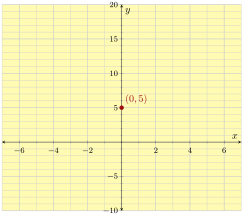
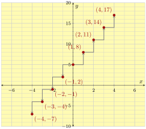
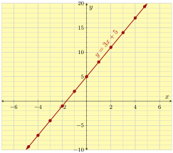
Subsection 3.5.3 Writing a Slope-Intercept Equation Given a Graph
We can write a linear equation in slope-intercept form based on its graph. We need to be able to calculate the line’s slope and see its \(y\)-intercept.
Checkpoint 3.5.17.
Use the graph to write an equation of the line in slope-intercept form.
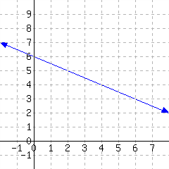
Explanation.
On the line, pick two points with easy-to-read integer coordinates so that we can calculate slope. It doesn’t matter which two points we use; the slope will be the same.
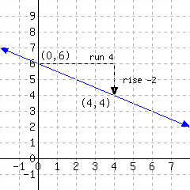
Using the slope triangle, we can calculate the line’s slope:
\begin{equation*}
\text{slope}=\frac{\Delta y}{\Delta x}=\frac{-2}{4}=-\frac{1}{2}
\text{.}
\end{equation*}
From the graph, we can see the \(y\)-intercept is \((0,6)\text{.}\)
With the slope and \(y\)-intercept found, we can write the line’s equation:
\begin{equation*}
y=-\frac{1}{2}x+6
\text{.}
\end{equation*}
Checkpoint 3.5.18.
There are seven public four-year colleges in Oregon. The graph plots the annual in-state tuition for each school on the \(x\)-axis, and the median income of former students ten years after first enrolling on the \(y\)-axis.
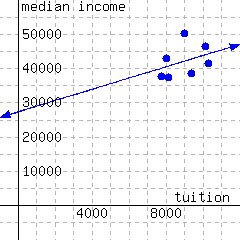
Write an equation for this line in slope-intercept form.
Explanation.
Do your best to identify two points on the line. We go with \((0,27500)\) and \((11000,45000)\text{.}\)
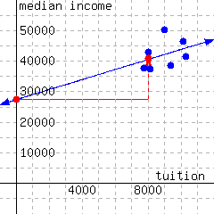
\begin{equation*}
\frac{\Delta y}{\Delta x}=\frac{45000-27500}{11000-0}=\frac{17500}{11000}\approx1.591
\end{equation*}
So the slope is about \(1.591\) dollars of median income per dollar of tuition. This is only an estimate since we are not certain the two points we chose are actually on the line.
Estimating the \(y\)-intercept to be at \((0,27500)\text{,}\) we have \(y=1.591x+27500\text{.}\)
Subsection 3.5.4 Writing a Slope-Intercept Equation Given Two Points
The idea that any two points uniquely determine a line has been understood for thousands of years in many cultures around the world. Once you have two specific points, there is a straightforward process to find the slope-intercept form of the equation of the line that connects them.
Example 3.5.19.
Find the slope-intercept form of the equation of the line that passes through the points \((0,5)\) and \((8,-5)\text{.}\)
Explanation.
We are trying to write down \(y=mx+b\text{,}\) but with specific numbers for \(m\) and \(b\text{.}\) So the first step is to find the slope, \(m\text{.}\) To do this, recall the slope formula from Section 4. It says that if a line passes through the points \((x_1,y_1)\) and \((x_2,y_2)\text{,}\) then the slope is found by the formula \(m=\frac{y_2-y_1}{x_2-x_1}\text{.}\)
Applying this to our two points \((\overset{x_1}{0},\overset{y_1}{5})\) and \((\overset{x_2}{8},\overset{y_2}{-5})\text{,}\) we see that the slope is:
\begin{align*}
m\amp=\frac{y_2-y_1}{x_2-x_1}\\
\amp=\frac{\substitute{-5}-\substitute{5}}{\substitute{8}-\substitute{0}}\\
\amp=\frac{-10}{8}=-\frac{5}{4}
\end{align*}
We are trying to write \(y=mx+b\text{.}\) Since we already found the slope, we know that we want to write \(y=-\frac{5}{4}x+b\) but we need a specific number for \(b\text{.}\) We happen to know that one point on this line is \((0,5)\text{,}\) which is on the \(y\)-axis because its \(x\)-value is \(0\text{.}\) So \((0,5)\) is this line’s \(y\)-intercept, and therefore \(b=5\text{.}\) So, our equation is
\begin{equation*}
y=-\frac{5}{4}x+5\text{.}
\end{equation*}
Example 3.5.20.
Find the slope-intercept form of the equation of the line that passes through the points \((3,-8)\) and \((-6,1)\text{.}\)
Explanation.
The first step is always to find the slope between our two points: \((\overset{x_1}{3},\overset{y_1}{-8})\) and \((\overset{x_2}{-6},\overset{y_2}{1})\text{.}\) Using the slope formula again, we have:
\begin{align*}
m\amp=\frac{y_2-y_1}{x_2-x_1}\\
\amp=\frac{\substitute{1}-\substitute{(-8)}}{\substitute{{-}6}-\substitute{3}}\\
\amp=\frac{9}{-9}\\
\amp=-1
\end{align*}
Now that we have the slope, we can write \(y=-1x+b\text{,}\) which simplifies to \(y=-x+b\text{.}\) Unlike in Example 19, we are not given the value of \(b\) because neither of our two given points have an \(x\)-value of \(0\text{.}\) The trick to finding \(b\) is to remember that we have two points that we know make the equation true! This means all we have to do is substitute either point into the equation for \(x\) and \(y\) and solve for \(b\text{.}\) Let’s arbitrarily choose \((3,-8)\) to plug in.
\begin{align*}
y\amp=-x+b\\
\substitute{-8}\amp=-(\substitute{3})+b\amp\text{(Now solve for }b\text{.)}\\
-8\amp=-3+b\\
-8\addright{3}\amp=-3+b\addright{3}\\
-5\amp=b
\end{align*}
In conclusion, the equation for which we were searching is \(y=-x-5\text{.}\)
Don’t be tempted to plug in values for \(x\) and \(y\) at this point. The general equation of a line in any form should have (at least one, and in this case two) variables in the final answer.
Checkpoint 3.5.21.
Find the slope-intercept form of the equation of the line that passes through the points \((-3,150)\) and \((0,30)\text{.}\)
Explanation.
The first step is always to find the slope between our points: \((\overset{x_1}{-3},\overset{y_1}{150})\) and \((\overset{x_2}{0},\overset{y_2}{30})\text{.}\) Using the slope formula, we have:
\begin{equation*}
\begin{aligned}
m\amp=\frac{y_2-y_1}{x_2-x_1}\\
\amp=\frac{\substitute{30}-\substitute{150}}{\substitute{0}-\substitute{(-3)}}\\
\amp=\frac{-120}{3}\\
\amp=-40
\end{aligned}
\end{equation*}
Now we can write \(y=-40x+b\) and to find \(b\) we need look no further than one of the given points: \((0,30)\text{.}\) Since the \(x\)-value is \(0\text{,}\) the value of \(b\) must be \(30\text{.}\) So, the slope-intercept form of the line is
\begin{equation*}
y=-40x+30
\end{equation*}
Checkpoint 3.5.22.
Find the slope-intercept form of the equation of the line that passes through the points \(\left(-3,\frac{3}{4}\right)\) and \(\left(-6,-\frac{17}{4}\right)\text{.}\)
Explanation.
First find the slope through our points: \(\left(-3,\frac{3}{4}\right)\) and \(\left(-6,-\frac{17}{4}\right)\text{.}\)
\begin{equation*}
\begin{aligned}
m\amp=\frac{y_2-y_1}{x_2-x_1}\\
\amp=\frac{\substitute{-\frac{17}{4}}-\substitute{\frac{3}{4}}}{\substitute{-6}-\substitute{(-3)}}\\
\amp=\frac{\frac{-20}{4}}{-3}\\
\amp=\frac{-5}{-3}\\
\amp=\frac{5}{3}
\end{aligned}
\end{equation*}
So far we have \(y=\frac{5}{3}x+b\text{.}\) Now we need to solve for \(b\) since neither of the points given were the vertical intercept. Recall that to do this, we will choose one of the two points and plug it into our equation. We choose \(\left(-3,\frac{3}{4}\right)\text{.}\)
\begin{equation*}
\begin{aligned}
y\amp=\frac{5}{3}x+b\\
\substitute{\frac{3}{4}}\amp=\frac{5}{3}(\substitute{-3})+b\\
\frac{3}{4}\amp=-5+b\\
\frac{3}{4}\addright{5}\amp=-5+b\addright{5}\\
\frac{3}{4}+\frac{20}{4}\amp=b\\
\frac{23}{4}\amp=b
\end{aligned}
\end{equation*}
Lastly, we write our equation.
\begin{equation*}
y=\frac{5}{3}x+\frac{23}{4}
\end{equation*}
Subsection 3.5.5 Modeling with Slope-Intercept Form
We can model many relatively simple relationships using slope-intercept form, and then solve related questions using algebra. Here are a few examples.
Example 3.5.23.
Uber is a ride-sharing company. Its pricing in Portland factors in how much time and how many miles a trip takes. But if you assume that rides average out at a speed of 30 mph, then their pricing scheme boils down to a base of \(\$7.35\) for the trip, plus \(\$3.85\) per mile. Use a slope-intercept equation and algebra to answer these questions.
- How much is the fare if a trip is \(5.3\) miles long?
- With \(\$100\) available to you, how long of a trip can you afford?
Explanation.
The rate of change (slope) is \(\$3.85\) per mile, and the starting value is \(\$7.35\text{.}\) So the slope-intercept equation is
\begin{equation*}
y=3.85x+7.35\text{.}
\end{equation*}
In this equation, \(x\) stands for the number of miles in a trip, and \(y\) stands for the amount of money to be charged.
If a trip is \(5.3\) miles long, we substitute \(x=5.3\) into the equation and we have:
\begin{align*}
y\amp=3.85x+7.35\\
\amp=3.85(\substitute{5.3})+7.35\\
\amp=20.405+7.35\\
\amp=27.755
\end{align*}
And the \(5.3\)-mile ride will cost you about \(\$27.76\text{.}\) (We say “about,” because this was all assuming you average 30 mph.)
Next, to find how long of a trip would cost \(\$100\text{,}\) we substitute \(y=100\) into the equation and solve for \(x\text{:}\)
\begin{align*}
y\amp=3.85x+7.35\\
\substitute{100}\amp=3.85x+7.35\\
100\subtractright{7.35}\amp=3.85x\\
92.65\amp=3.85x\\
\divideunder{92.65}{3.85}\amp=x\\
24.06\amp\approx x
\end{align*}
So with \(\$100\) you could afford a little more than a \(24\)-mile trip.
Checkpoint 3.5.24.
In a certain wildlife reservation in Africa, there are approximately \(2400\) elephants. Sadly, the population has been decreasing by \(30\) elephants per year. Use a slope-intercept equation and algebra to answer these questions.
- If the trend continues, what would the elephant population be \(15\) years from now?
- If the trend continues, how many years will it be until the elephant population dwindles to \(1200\text{?}\)
Explanation.
The rate of change (slope) is \(-30\) elephants per year. Notice that since we are losing elephants, the slope is a negative number. The starting value is \(2400\) elephants. So the slope-intercept equation is
\begin{equation*}
y=-30x+2400
\text{.}
\end{equation*}
In this equation, \(x\) stands for a number of years into the future, and \(y\) stands for the elephant population. To estimate the elephant population \(15\) years later, we substitute \(x\) in the equation with \(15\text{,}\) and we have:
\begin{equation*}
\begin{aligned}
y\amp=-30x+2400\\
\amp=-30(\substitute{15})+2400\\
\amp=-450+2400\\
\amp=1950
\end{aligned}
\end{equation*}
So if the trend continues, there would be \(1950\) elephants on this reservation 15 years later.
Next, to find when the elephant population would decrease to \(1200\text{,}\) we substitute \(y\) in the equation with \(1200\text{,}\) and solve for \(x\text{:}\)
\begin{equation*}
\begin{aligned}
y\amp=-30x+2400\\
\substitute{1200}\amp=-30x+2400\\
1200\subtractright{2400}\amp=-30x\\
-1200\amp=-30x\\
\divideunder{-1200}{-30}\amp=x\\
40\amp=x
\end{aligned}
\end{equation*}
So if the trend continues, \(40\) years later, the elephant population would dwindle to \(1200\text{.}\)
Reading Questions 3.5.6 Reading Questions
1.
How does “slope-intercept form” get its name?
2.
What are two phrases you can use for “\(b\)” in a slope-intercept form line equation?
3.
Explain the two basic steps to graphing a line when you have the equation in slope-intercept form. (Not counting the step where you draw and label the axes and ticks.)
Exercises 3.5.7 Exercises
Review and Warmup
Exercise Group.
1.
Evaluate \({7A+6a}\) for \(A = 10\) and \(a = 8\text{.}\)
Answer.
\(118\)
Explanation.
We evaluate \({7A+6a}\) by replacing \(A\) with \(10\) and \(a\) with \(8\) in the formula.
\(\begin{aligned}
{7A+6a} \amp = 7(10) + 6(8) \\
\amp = 70 + 48 \\
\amp = {118}
\end{aligned}\)
2.
Evaluate \({-8A+10b}\) for \(A = -1\) and \(b = 4\text{.}\)
Answer.
\(48\)
Explanation.
We evaluate \({-8A+10b}\) by replacing \(A\) with \(-1\) and \(b\) with \(4\) in the formula.
\(\begin{aligned}
{-8A+10b} \amp = -8(-1) + 10(4) \\
\amp = 8 + 40 \\
\amp = {48}
\end{aligned}\)
3.
Evaluate
\begin{equation*}
\displaystyle\frac{y_2 - y_1}{x_2 - x_1}
\end{equation*}
for \(x_1 = 11\text{,}\) \(x_2 = 17\text{,}\) \(y_1 = 15\text{,}\) and \(y_2 = -4\text{:}\)
Answer:
Answer.
\(-{\frac{19}{6}}\)
4.
Evaluate
\begin{equation*}
\displaystyle\frac{y_2 - y_1}{x_2 - x_1}
\end{equation*}
for \(x_1 = 16\text{,}\) \(x_2 = 3\text{,}\) \(y_1 = -9\text{,}\) and \(y_2 = -15\text{:}\)
Answer:
Answer.
\({\frac{6}{13}}\)
Skills Practice
Identifying Slope and \(y\)-Intercept.
5.
Find the line’s slope and \(y\)-intercept.
A line has equation \(y={10}x+3\text{.}\)
This line’s slope is .
This line’s \(y\)-intercept is .
Answer 1.
\(10\)
Answer 2.
\(\left(0,3\right)\)
Explanation.
When an equation of a line is written in the form \(y=mx+b\text{,}\) it is said to be in slope-intercept form. In this form, \(m\) is the line’s slope, and \(b\) is the coordinate on the \(y\)-axis where the line intercepts the \(y\)-axis.
In this problem, the line’s equation is given as \(y={10}x+3\text{.}\) Thus its slope is \({10}\text{,}\) and its \(y\)-intercept has coordinates \((0,3)\text{.}\)
6.
Find the line’s slope and \(y\)-intercept.
A line has equation \(y={2}x+9\text{.}\)
This line’s slope is .
This line’s \(y\)-intercept is .
Answer 1.
\(2\)
Answer 2.
\(\left(0,9\right)\)
Explanation.
When an equation of a line is written in the form \(y=mx+b\text{,}\) it is said to be in slope-intercept form. In this form, \(m\) is the line’s slope, and \(b\) is the coordinate on the \(y\)-axis where the line intercepts the \(y\)-axis.
In this problem, the line’s equation is given as \(y={2}x+9\text{.}\) Thus its slope is \({2}\text{,}\) and its \(y\)-intercept has coordinates \((0,9)\text{.}\)
7.
Find the line’s slope and \(y\)-intercept.
A line has equation \(y={-9}x - 5\text{.}\)
This line’s slope is .
This line’s \(y\)-intercept is .
Answer 1.
\(-9\)
Answer 2.
\(\left(0,-5\right)\)
Explanation.
When an equation of a line is written in the form \(y=mx+b\text{,}\) it is said to be in slope-intercept form. In this form, \(m\) is the line’s slope, and \(b\) is the coordinate on the \(y\)-axis where the line intercepts the \(y\)-axis.
In this problem, the line’s equation is given as \(y={-9}x - 5\text{.}\) Thus its slope is \({-9}\text{,}\) and its \(y\)-intercept has coordinates \((0,-5)\text{.}\)
8.
Find the line’s slope and \(y\)-intercept.
A line has equation \(y={-8}x - 9\text{.}\)
This line’s slope is .
This line’s \(y\)-intercept is .
Answer 1.
\(-8\)
Answer 2.
\(\left(0,-9\right)\)
Explanation.
When an equation of a line is written in the form \(y=mx+b\text{,}\) it is said to be in slope-intercept form. In this form, \(m\) is the line’s slope, and \(b\) is the coordinate on the \(y\)-axis where the line intercepts the \(y\)-axis.
In this problem, the line’s equation is given as \(y={-8}x - 9\text{.}\) Thus its slope is \({-8}\text{,}\) and its \(y\)-intercept has coordinates \((0,-9)\text{.}\)
9.
Find the line’s slope and \(y\)-intercept.
A line has equation \(y=x - 1\text{.}\)
This line’s slope is .
This line’s \(y\)-intercept is .
Answer 1.
\(1\)
Answer 2.
\(\left(0,-1\right)\)
Explanation.
When an equation of a line is written in the form \(y=mx+b\text{,}\) it is said to be in slope-intercept form. In this form, \(m\) is the line’s slope, and \(b\) is the coordinate on the \(y\)-axis where the line intercepts the \(y\)-axis.
In this problem, the line’s equation is given as \(y=x - 1\text{.}\) Since there is no written coefficient for \(x\text{,}\) we have to think of the first term as \(1 \cdot x\text{.}\)
Thus its slope is \({1}\text{,}\) and its \(y\)-intercept has coordinates \((0,-1)\text{.}\)
10.
Find the line’s slope and \(y\)-intercept.
A line has equation \(y=x+1\text{.}\)
This line’s slope is .
This line’s \(y\)-intercept is .
Answer 1.
\(1\)
Answer 2.
\(\left(0,1\right)\)
Explanation.
When an equation of a line is written in the form \(y=mx+b\text{,}\) it is said to be in slope-intercept form. In this form, \(m\) is the line’s slope, and \(b\) is the coordinate on the \(y\)-axis where the line intercepts the \(y\)-axis.
In this problem, the line’s equation is given as \(y=x+1\text{.}\) Since there is no written coefficient for \(x\text{,}\) we have to think of the first term as \(1 \cdot x\text{.}\)
Thus its slope is \({1}\text{,}\) and its \(y\)-intercept has coordinates \((0,1)\text{.}\)
11.
Find the line’s slope and \(y\)-intercept.
A line has equation \(y=-x+3\text{.}\)
This line’s slope is .
This line’s \(y\)-intercept is .
Answer 1.
\(-1\)
Answer 2.
\(\left(0,3\right)\)
Explanation.
When an equation of a line is written in the form \(y=mx+b\text{,}\) it is said to be in slope-intercept form. In this form, \(m\) is the line’s slope, and \(b\) is the coordinate on the \(y\)-axis where the line intercepts the \(y\)-axis.
In this problem, the line’s equation is given as \(y= -x+3\text{.}\) Since there is no written coefficient (except for a negative symbol) for \(x\text{,}\) we have to think of the first term as \(-1 \cdot x\text{.}\)
Thus its slope is \({-1}\text{,}\) and its \(y\)-intercept has coordinates \((0,3)\text{.}\)
12.
Find the line’s slope and \(y\)-intercept.
A line has equation \(y=-x+6\text{.}\)
This line’s slope is .
This line’s \(y\)-intercept is .
Answer 1.
\(-1\)
Answer 2.
\(\left(0,6\right)\)
Explanation.
When an equation of a line is written in the form \(y=mx+b\text{,}\) it is said to be in slope-intercept form. In this form, \(m\) is the line’s slope, and \(b\) is the coordinate on the \(y\)-axis where the line intercepts the \(y\)-axis.
In this problem, the line’s equation is given as \(y= -x+6\text{.}\) Since there is no written coefficient (except for a negative symbol) for \(x\text{,}\) we have to think of the first term as \(-1 \cdot x\text{.}\)
Thus its slope is \({-1}\text{,}\) and its \(y\)-intercept has coordinates \((0,6)\text{.}\)
13.
Find the line’s slope and \(y\)-intercept.
A line has equation \(\displaystyle{ y= -\frac{8}{5}x - 10 }\text{.}\)
This line’s slope is .
This line’s \(y\)-intercept is .
Answer 1.
\(-{\frac{8}{5}}\)
Answer 2.
\(\left(0,-10\right)\)
Explanation.
When an equation of a line is written in the form \(y=mx+b\text{,}\) it is said to be in slope-intercept form. In this form, \(m\) is the line’s slope, and \(b\) is the coordinate on the \(y\)-axis where the line intercepts the \(y\)-axis.
In this problem, the line’s equation is given as \(\displaystyle{ y= -\frac{8x}{5} - 10 }\text{.}\) We can think of the first term as \(\displaystyle{-\frac{8}{5}x }\text{.}\) This is because:
\(\displaystyle{ \begin{aligned}-\frac{8x}{5} \amp = -\frac{8}{5} \cdot \frac{x}{1}\\\amp = -\frac{8}{5}x \end{aligned}}\)
Thus the line’s slope is \(\displaystyle{-\frac{8}{5}}\text{,}\) and its \(y\)-intercept has coordinates \((0,-10)\text{.}\)
14.
Find the line’s slope and \(y\)-intercept.
A line has equation \(\displaystyle{ y= -\frac{8}{3}x - 1 }\text{.}\)
This line’s slope is .
This line’s \(y\)-intercept is .
Answer 1.
\(-{\frac{8}{3}}\)
Answer 2.
\(\left(0,-1\right)\)
Explanation.
When an equation of a line is written in the form \(y=mx+b\text{,}\) it is said to be in slope-intercept form. In this form, \(m\) is the line’s slope, and \(b\) is the coordinate on the \(y\)-axis where the line intercepts the \(y\)-axis.
In this problem, the line’s equation is given as \(\displaystyle{ y= -\frac{8x}{3} - 1 }\text{.}\) We can think of the first term as \(\displaystyle{-\frac{8}{3}x }\text{.}\) This is because:
\(\displaystyle{ \begin{aligned}-\frac{8x}{3} \amp = -\frac{8}{3} \cdot \frac{x}{1}\\\amp = -\frac{8}{3}x \end{aligned}}\)
Thus the line’s slope is \(\displaystyle{-\frac{8}{3}}\text{,}\) and its \(y\)-intercept has coordinates \((0,-1)\text{.}\)
15.
Find the line’s slope and \(y\)-intercept.
A line has equation \(\displaystyle{ y= \frac{1}{2}x +8 }\text{.}\)
This line’s slope is .
This line’s \(y\)-intercept is .
Answer 1.
\({\frac{1}{2}}\)
Answer 2.
\(\left(0,8\right)\)
Explanation.
When an equation of a line is written in the form \(y=mx+b\text{,}\) it is said to be in slope-intercept form. In this form, \(m\) is the line’s slope, and \(b\) is the coordinate on the \(y\)-axis where the line intercepts the \(y\)-axis.
In this problem, the line’s equation is given as \(\displaystyle{ y= \frac{x}{2} +8 }\text{.}\) We can think of the first term as \(\displaystyle{\frac{1}{2}x }\text{.}\) This is because:
\(\displaystyle{ \begin{aligned}\frac{x}{2} \amp = \frac{1}{2} \cdot \frac{x}{1}\\ \amp = \frac{1}{2}x\end{aligned} }\)
Thus the line’s slope is \(\displaystyle{\frac{1}{2}}\text{,}\) and its \(y\)-intercept has coordinates \((0,8)\text{.}\)
16.
Find the line’s slope and \(y\)-intercept.
A line has equation \(\displaystyle{ y= \frac{1}{4}x - 7 }\text{.}\)
This line’s slope is .
This line’s \(y\)-intercept is .
Answer 1.
\({\frac{1}{4}}\)
Answer 2.
\(\left(0,-7\right)\)
Explanation.
When an equation of a line is written in the form \(y=mx+b\text{,}\) it is said to be in slope-intercept form. In this form, \(m\) is the line’s slope, and \(b\) is the coordinate on the \(y\)-axis where the line intercepts the \(y\)-axis.
In this problem, the line’s equation is given as \(\displaystyle{ y= \frac{x}{4} - 7 }\text{.}\) We can think of the first term as \(\displaystyle{\frac{1}{4}x }\text{.}\) This is because:
\(\displaystyle{ \begin{aligned}\frac{x}{4} \amp = \frac{1}{4} \cdot \frac{x}{1}\\ \amp = \frac{1}{4}x\end{aligned} }\)
Thus the line’s slope is \(\displaystyle{\frac{1}{4}}\text{,}\) and its \(y\)-intercept has coordinates \((0,-7)\text{.}\)
17.
Find the line’s slope and \(y\)-intercept.
A line has equation \(\displaystyle{ y= -10 +{4}x }\text{.}\)
This line’s slope is .
This line’s \(y\)-intercept is .
Answer 1.
\(4\)
Answer 2.
\(\left(0,-10\right)\)
Explanation.
When an equation of a line is written in the form \(y=mx+b\text{,}\) it is said to be in slope-intercept form. In this form, \(m\) is the line’s slope, and \(b\) is the coordinate on the \(y\)-axis where the line intercepts the \(y\)-axis.
In this problem, the line’s equation is given as \(\displaystyle{ y= -10+{4}x }\text{.}\) We may rewrite this in slope-intercept form: \(\displaystyle{ y= {4}x - 10 }\text{.}\)
Thus the line’s slope is \({4}\text{,}\) and its \(y\)-intercept has coordinates \((0,-10)\text{.}\)
18.
Find the line’s slope and \(y\)-intercept.
A line has equation \(\displaystyle{ y= 4 +{5}x }\text{.}\)
This line’s slope is .
This line’s \(y\)-intercept is .
Answer 1.
\(5\)
Answer 2.
\(\left(0,4\right)\)
Explanation.
When an equation of a line is written in the form \(y=mx+b\text{,}\) it is said to be in slope-intercept form. In this form, \(m\) is the line’s slope, and \(b\) is the coordinate on the \(y\)-axis where the line intercepts the \(y\)-axis.
In this problem, the line’s equation is given as \(\displaystyle{ y= 4+{5}x }\text{.}\) We may rewrite this in slope-intercept form: \(\displaystyle{ y= {5}x+4 }\text{.}\)
Thus the line’s slope is \({5}\text{,}\) and its \(y\)-intercept has coordinates \((0,4)\text{.}\)
19.
Find the line’s slope and \(y\)-intercept.
A line has equation \(\displaystyle{ y= 6 -x }\text{.}\)
This line’s slope is .
This line’s \(y\)-intercept is .
Answer 1.
\(-1\)
Answer 2.
\(\left(0,6\right)\)
Explanation.
When an equation of a line is written in the form \(y=mx+b\text{,}\) it is said to be in slope-intercept form. In this form, \(m\) is the line’s slope, and \(b\) is the coordinate on the \(y\)-axis where the line intercepts the \(y\)-axis.
In this problem, the line’s equation is given as \(\displaystyle{ y= 6-x }\text{.}\) We may rewrite this in slope-intercept form: \(\displaystyle{ y= -x+6 }\text{.}\)
Since there is no written coefficient (except a negative symbol) for \(x\text{,}\) we need to think of the term as \((-1) \cdot x\text{.}\)
Thus the line’s slope is \({-1}\text{,}\) and its \(y\)-intercept has coordinates \((0,6)\text{.}\)
20.
Find the line’s slope and \(y\)-intercept.
A line has equation \(\displaystyle{ y= 7 -x }\text{.}\)
This line’s slope is .
This line’s \(y\)-intercept is .
Answer 1.
\(-1\)
Answer 2.
\(\left(0,7\right)\)
Explanation.
When an equation of a line is written in the form \(y=mx+b\text{,}\) it is said to be in slope-intercept form. In this form, \(m\) is the line’s slope, and \(b\) is the coordinate on the \(y\)-axis where the line intercepts the \(y\)-axis.
In this problem, the line’s equation is given as \(\displaystyle{ y= 7-x }\text{.}\) We may rewrite this in slope-intercept form: \(\displaystyle{ y= -x+7 }\text{.}\)
Since there is no written coefficient (except a negative symbol) for \(x\text{,}\) we need to think of the term as \((-1) \cdot x\text{.}\)
Thus the line’s slope is \({-1}\text{,}\) and its \(y\)-intercept has coordinates \((0,7)\text{.}\)
Graphs and Slope-Intercept Form.
21.
A line’s graph is given. What is this line’s slope-intercept equation?
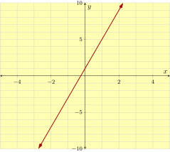
Answer.
\(y = 4x+1\)
Explanation.
A line’s slope-intercept equation has the form \(y=mx+b\text{,}\) where \(m\) is the slope and \(b\) is the \(y\)-coordinate of the \(y\)-intercept. We first find the slope.
To find the slope of a line from its graph, we identify two points, and then draw a slope triangle. It’s wise to choose points with integer coordinates. For this problem, we choose \((0,1)\) and \((1,5)\text{.}\)
Next, we draw a slope triangle and find the "rise" and "run". In this problem, the rise is \(4\) and the run is \(1\text{.}\)
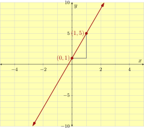
\begin{equation*}
\begin{aligned}\text{slope}\amp =\frac{\text{rise}}{\text{run}}\\\amp =\frac{4}{1}\\\amp =4\end{aligned}
\end{equation*}
This line’s slope is \(4\text{.}\)
It’s clear in the graph that this line’s \(y\)-intercept is \((0,1)\text{.}\)
So this line’s slope-intercept equation is \(y= 4 x+ 1\text{.}\)
22.
A line’s graph is given. What is this line’s slope-intercept equation?

Answer.
\(y = 5x-2\)
Explanation.
A line’s slope-intercept equation has the form \(y=mx+b\text{,}\) where \(m\) is the slope and \(b\) is the \(y\)-coordinate of the \(y\)-intercept. We first find the slope.
To find the slope of a line from its graph, we identify two points, and then draw a slope triangle. It’s wise to choose points with integer coordinates. For this problem, we choose \((0,-2)\) and \((1,3)\text{.}\)
Next, we draw a slope triangle and find the "rise" and "run". In this problem, the rise is \(5\) and the run is \(1\text{.}\)
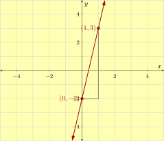
\begin{equation*}
\begin{aligned}\text{slope}\amp =\frac{\text{rise}}{\text{run}}\\\amp =\frac{5}{1}\\\amp =5\end{aligned}
\end{equation*}
This line’s slope is \(5\text{.}\)
It’s clear in the graph that this line’s \(y\)-intercept is \((0,-2)\text{.}\)
So this line’s slope-intercept equation is \(y= 5 x - 2\text{.}\)
23.
A line’s graph is given. What is this line’s slope-intercept equation?
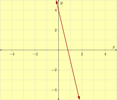
Answer.
\(y = -5x+4\)
Explanation.
A line’s slope-intercept equation has the form \(y=mx+b\text{,}\) where \(m\) is the slope and \(b\) is the \(y\)-coordinate of the \(y\)-intercept. We first find the slope.
To find the slope of a line from its graph, we identify two points, and then draw a slope triangle. It’s wise to choose points with integer coordinates. For this problem, we choose \((0,4)\) and \((1,-1)\text{.}\)
Next, we draw a slope triangle and find the "rise" and "run". In this problem, the rise is \(-5\) and the run is \(1\text{.}\)
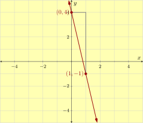
\begin{equation*}
\begin{aligned}\text{slope}\amp =\frac{\text{rise}}{\text{run}}\\\amp =\frac{-5}{1}\\\amp =-5\end{aligned}
\end{equation*}
This line’s slope is \(-5\text{.}\)
It’s clear in the graph that this line’s \(y\)-intercept is \((0,4)\text{.}\)
So this line’s slope-intercept equation is \(y= -5 x+ 4\text{.}\)
24.
A line’s graph is given. What is this line’s slope-intercept equation?

Answer.
\(y = -x+1\)
Explanation.
A line’s slope-intercept equation has the form \(y=mx+b\text{,}\) where \(m\) is the slope and \(b\) is the \(y\)-coordinate of the \(y\)-intercept. We first find the slope.
To find the slope of a line from its graph, we identify two points, and then draw a slope triangle. It’s wise to choose points with integer coordinates. For this problem, we choose \((0,1)\) and \((1,0)\text{.}\)
Next, we draw a slope triangle and find the "rise" and "run". In this problem, the rise is \(-1\) and the run is \(1\text{.}\)
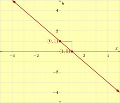
\begin{equation*}
\begin{aligned}\text{slope}\amp =\frac{\text{rise}}{\text{run}}\\\amp =\frac{-1}{1}\\\amp =-1\end{aligned}
\end{equation*}
This line’s slope is \(-1\text{.}\)
It’s clear in the graph that this line’s \(y\)-intercept is \((0,1)\text{.}\)
So this line’s slope-intercept equation is \(y= -1 x+ 1\text{.}\)
25.
A line’s graph is given. What is this line’s slope-intercept equation?
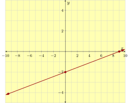
Answer.
\(y=\frac{2}{9}x-2\)
Explanation.
A line’s slope-intercept equation has the form \(y=mx+b\text{,}\) where \(m\) is the slope and \(b\) is the \(y\)-coordinate of the \(y\)-intercept. We first find the slope.
To find the slope of a line from its graph, we identify two points, and then draw a slope triangle. It’s wise to choose points with integer coordinates. For this problem, we choose \((0,-2)\) and \((9,0)\text{.}\)
Next, we draw a slope triangle and find the "rise" and "run". In this problem, the rise is \(2\) and the run is \(9\text{.}\)
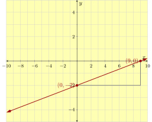
\begin{equation*}
\begin{aligned}\text{slope}\amp =\frac{\text{rise}}{\text{run}}\\\amp =\frac{2}{9}\\\amp ={\frac{2}{9}}\end{aligned}
\end{equation*}
This line’s slope is \({\frac{2}{9}}\text{.}\)
It’s clear in the graph that this line’s \(y\)-intercept is \((0,-2)\text{.}\)
So this line’s slope-intercept equation is \(y= {\frac{2}{9}} x - 2\text{.}\)
26.
A line’s graph is given. What is this line’s slope-intercept equation?

Answer.
\(y=\frac{3}{5}x-4\)
Explanation.
A line’s slope-intercept equation has the form \(y=mx+b\text{,}\) where \(m\) is the slope and \(b\) is the \(y\)-coordinate of the \(y\)-intercept. We first find the slope.
To find the slope of a line from its graph, we identify two points, and then draw a slope triangle. It’s wise to choose points with integer coordinates. For this problem, we choose \((0,-4)\) and \((5,-1)\text{.}\)
Next, we draw a slope triangle and find the "rise" and "run". In this problem, the rise is \(3\) and the run is \(5\text{.}\)
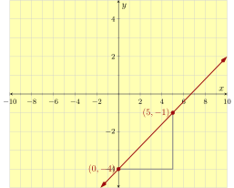
\begin{equation*}
\begin{aligned}\text{slope}\amp =\frac{\text{rise}}{\text{run}}\\\amp =\frac{3}{5}\\\amp ={\frac{3}{5}}\end{aligned}
\end{equation*}
This line’s slope is \({\frac{3}{5}}\text{.}\)
It’s clear in the graph that this line’s \(y\)-intercept is \((0,-4)\text{.}\)
So this line’s slope-intercept equation is \(y= {\frac{3}{5}} x - 4\text{.}\)
27.
A line’s graph is given. What is this line’s slope-intercept equation?
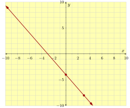
Answer.
\(y=-\frac{4}{3}x-4\)
Explanation.
A line’s slope-intercept equation has the form \(y=mx+b\text{,}\) where \(m\) is the slope and \(b\) is the \(y\)-coordinate of the \(y\)-intercept. We first find the slope.
To find the slope of a line from its graph, we identify two points, and then draw a slope triangle. It’s wise to choose points with integer coordinates. For this problem, we choose \((0,-4)\) and \((3,-8)\text{.}\)
Next, we draw a slope triangle and find the "rise" and "run". In this problem, the rise is \(-4\) and the run is \(3\text{.}\)
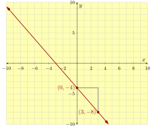
\begin{equation*}
\begin{aligned}\text{slope}\amp =\frac{\text{rise}}{\text{run}}\\\amp =\frac{-4}{3}\\\amp =-{\frac{4}{3}}\end{aligned}
\end{equation*}
This line’s slope is \(-{\frac{4}{3}}\text{.}\)
It’s clear in the graph that this line’s \(y\)-intercept is \((0,-4)\text{.}\)
So this line’s slope-intercept equation is \(y= -{\frac{4}{3}} x - 4\text{.}\)
28.
A line’s graph is given. What is this line’s slope-intercept equation?

Answer.
\(y=-\frac{5}{3}x-2\)
Explanation.
A line’s slope-intercept equation has the form \(y=mx+b\text{,}\) where \(m\) is the slope and \(b\) is the \(y\)-coordinate of the \(y\)-intercept. We first find the slope.
To find the slope of a line from its graph, we identify two points, and then draw a slope triangle. It’s wise to choose points with integer coordinates. For this problem, we choose \((0,-2)\) and \((3,-7)\text{.}\)
Next, we draw a slope triangle and find the "rise" and "run". In this problem, the rise is \(-5\) and the run is \(3\text{.}\)
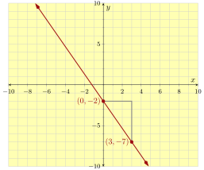
\begin{equation*}
\begin{aligned}\text{slope}\amp =\frac{\text{rise}}{\text{run}}\\\amp =\frac{-5}{3}\\\amp =-{\frac{5}{3}}\end{aligned}
\end{equation*}
This line’s slope is \(-{\frac{5}{3}}\text{.}\)
It’s clear in the graph that this line’s \(y\)-intercept is \((0,-2)\text{.}\)
So this line’s slope-intercept equation is \(y= -{\frac{5}{3}} x - 2\text{.}\)
Graph Equations.
Graph the equation.
29.
\({y = 4x}\)
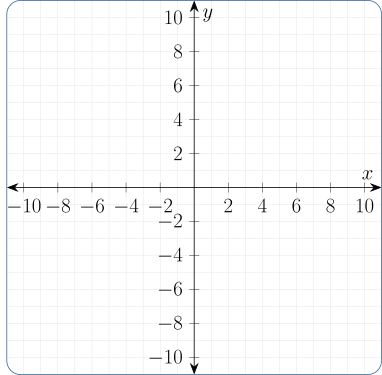
Answer.
\(\left\{\text{line}, \text{solid}, \left(0,0\right), \left(1,4\right)\right\}\)
30.
\(y=5x\)
Answer.
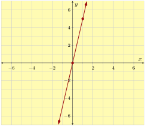
31.
\(y=-3x\)
Answer.
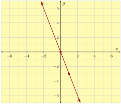
32.
\(y=-2x\)
Answer.
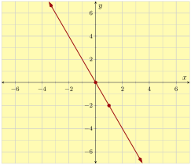
33.
\(y=\frac{5}{2}x\)
Answer.
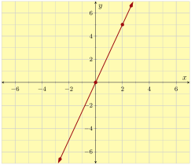
34.
\(y=\frac{1}{4}x\)
Answer.
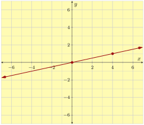
35.
\(y=-\frac{1}{3}x\)
Answer.
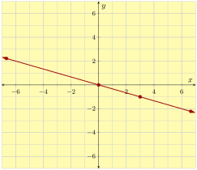
36.
\(y=-\frac{5}{4}x\)
Answer.
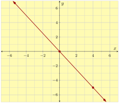
37.
\(y=5x+2\)
Answer.
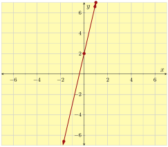
38.
\(y=3x+6\)
Answer.
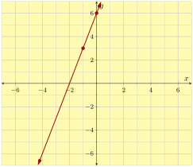
39.
\(y=-4x+3\)
Answer.
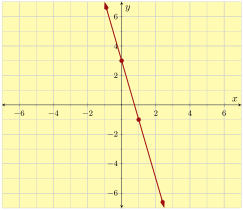
40.
\(y=-2x+5\)
Answer.
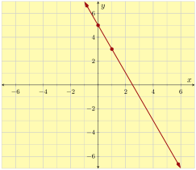
41.
\(y=x-4\)
Answer.
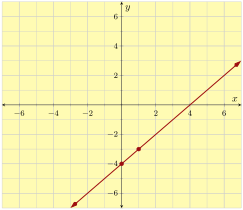
42.
\(y=x+2\)
Answer.
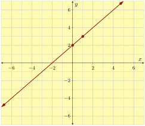
43.
\(y=-x+3\)
Answer.
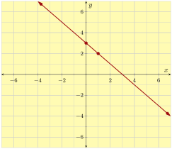
44.
\(y=-x-5\)
Answer.
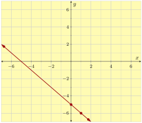
45.
\(y=\frac{2}{3}x+4\)
Answer.
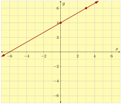
46.
\(y=\frac{3}{2}x-5\)
Answer.
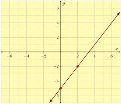
47.
\(y=-\frac{3}{5}x-1\)
Answer.
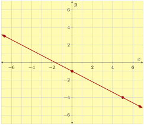
48.
\(y=-\frac{1}{5}x+1\)
Answer.
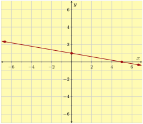
Writing a Slope-Intercept Equation Given Two Points.
49.
Find the following line’s equation in slope-intercept form.
The line passes through the points \((1,11)\) and \((5,31)\text{.}\)
Answer.
\(y = 5x+6\)
Explanation.
The slope-intercept form of a line’s equation has the form \(y=mx+b\) where \(m\) is the slope and \(b\) is the \(y\)-coordinate of the \(y\)-intercept. To find a line’s slope-intercept equation, we first try to find the line’s slope.
To find a line’s slope, we can use the slope formula:
\(\displaystyle{ \text{slope}=\frac{y_{2}-y_{1}}{x_{2}-x_{1}} }\)
First, we mark which number corresponds to which variable in the formula:
\(\displaystyle{ (1,11) \longrightarrow (x_{1},y_{1}) }\)
\(\displaystyle{ (5,31) \longrightarrow (x_{2},y_{2}) }\)
Now we substitute these numbers into the corresponding variables in the slope formula:
\(\displaystyle{ \begin{aligned}\text{slope}\amp =\frac{y_{2}-y_{1}}{x_{2}-x_{1}}\\
\amp =\frac{31-11}{5-1}\\
\amp =\frac{20}{4}\\
\amp =5 \end{aligned}}\)
Now we have \(y=5x+b\text{.}\) The next step is to find the value of \(b\text{.}\) There are at least two ways we can do this.
One way is to substitute one of the given points into \(y=5x+b\text{.}\) We choose to use \((1,11)\text{.}\)
\(\begin{aligned}
y \amp = 5x + b \\
11 \amp = 5 \cdot 1 + b \\
11 \amp = 5 + b \\
11\mathbf{{}-5} \amp = 5 + b\mathbf{{}-5} \\
6 \amp = b\\
b \amp = 6
\end{aligned}\)
This line’s slope-intercept equation is \(y=5x+6\text{.}\)
Another way is to use the line’s point-slope equation \(y-y_{1}=m(x-x_{1})\text{.}\) Again, we choose to use the point \((1,11)\text{.}\)
\(\begin{aligned}
y-y_{1} \amp = m(x-x_{1}) \\
y-11 \amp = 5(x-1) \\
y-11 \amp = 5x+5 \cdot (-1) \\
y-11 \amp = 5x - 5 \\
y-11\mathbf{{}+11} \amp = 5x - 5\mathbf{{}+11} \\
y \amp = 5x+6
\end{aligned}\)
This is the second way to find \(b\text{,}\) and thus the line’s slope-intercept equation is \(y=5x+6\text{.}\)
50.
Find the following line’s equation in slope-intercept form.
The line passes through the points \((3,17)\) and \((4,22)\text{.}\)
Answer.
\(y = 5x+2\)
Explanation.
The slope-intercept form of a line’s equation has the form \(y=mx+b\) where \(m\) is the slope and \(b\) is the \(y\)-coordinate of the \(y\)-intercept. To find a line’s slope-intercept equation, we first try to find the line’s slope.
To find a line’s slope, we can use the slope formula:
\(\displaystyle{ \text{slope}=\frac{y_{2}-y_{1}}{x_{2}-x_{1}} }\)
First, we mark which number corresponds to which variable in the formula:
\(\displaystyle{ (3,17) \longrightarrow (x_{1},y_{1}) }\)
\(\displaystyle{ (4,22) \longrightarrow (x_{2},y_{2}) }\)
Now we substitute these numbers into the corresponding variables in the slope formula:
\(\displaystyle{ \begin{aligned}\text{slope}\amp =\frac{y_{2}-y_{1}}{x_{2}-x_{1}}\\
\amp =\frac{22-17}{4-3}\\
\amp =\frac{5}{1}\\
\amp =5 \end{aligned}}\)
Now we have \(y=5x+b\text{.}\) The next step is to find the value of \(b\text{.}\) There are at least two ways we can do this.
One way is to substitute one of the given points into \(y=5x+b\text{.}\) We choose to use \((3,17)\text{.}\)
\(\begin{aligned}
y \amp = 5x + b \\
17 \amp = 5 \cdot 3 + b \\
17 \amp = 15 + b \\
17\mathbf{{}-15} \amp = 15 + b\mathbf{{}-15} \\
2 \amp = b\\
b \amp = 2
\end{aligned}\)
This line’s slope-intercept equation is \(y=5x+2\text{.}\)
Another way is to use the line’s point-slope equation \(y-y_{1}=m(x-x_{1})\text{.}\) Again, we choose to use the point \((3,17)\text{.}\)
\(\begin{aligned}
y-y_{1} \amp = m(x-x_{1}) \\
y-17 \amp = 5(x-3) \\
y-17 \amp = 5x+5 \cdot (-3) \\
y-17 \amp = 5x - 15 \\
y-17\mathbf{{}+17} \amp = 5x - 15\mathbf{{}+17} \\
y \amp = 5x+2
\end{aligned}\)
This is the second way to find \(b\text{,}\) and thus the line’s slope-intercept equation is \(y=5x+2\text{.}\)
51.
Find the following line’s equation in slope-intercept form.
The line passes through the points \((5,-3)\) and \((-1,9)\text{.}\)
Answer.
\(y = -2x+7\)
Explanation.
The slope-intercept form of a line’s equation has the form \(y=mx+b\) where \(m\) is the slope and \(b\) is the \(y\)-coordinate of the \(y\)-intercept. To find a line’s slope-intercept equation, we first try to find the line’s slope.
To find a line’s slope, we can use the slope formula:
\(\displaystyle{ \text{slope}=\frac{y_{2}-y_{1}}{x_{2}-x_{1}} }\)
First, we mark which number corresponds to which variable in the formula:
\(\displaystyle{ (5,-3) \longrightarrow (x_{1},y_{1}) }\)
\(\displaystyle{ (-1,9) \longrightarrow (x_{2},y_{2}) }\)
Now we substitute these numbers into the corresponding variables in the slope formula:
\(\displaystyle{ \begin{aligned}\text{slope}\amp =\frac{y_{2}-y_{1}}{x_{2}-x_{1}}\\
\amp =\frac{9-(-3)}{-1-5}\\
\amp =\frac{12}{-6}\\
\amp =-2 \end{aligned}}\)
Now we have \(y=-2x+b\text{.}\) The next step is to find the value of \(b\text{.}\) There are at least two ways we can do this.
One way is to substitute one of the given points into \(y=-2x+b\text{.}\) We choose to use \((5,-3)\text{.}\)
\(\begin{aligned}
y \amp = -2x + b \\
-3 \amp = -2 \cdot 5 + b \\
-3 \amp = -10 + b \\
-3\mathbf{{} + 10} \amp = -10 + b\mathbf{{} + 10} \\
7 \amp = b\\
b \amp = 7
\end{aligned}\)
This line’s slope-intercept equation is \(y=-2x+7\text{.}\)
Another way is to use the line’s point-slope equation \(y-y_{1}=m(x-x_{1})\text{.}\) Again, we choose to use the point \((5,-3)\text{.}\)
\(\begin{aligned}
y-y_{1} \amp = m(x-x_{1}) \\
y + 3 \amp = -2(x-5) \\
y + 3 \amp = -2x - 2 \cdot (-5) \\
y + 3 \amp = -2x+10 \\
y + 3\mathbf{{} - 3} \amp = -2x+10\mathbf{{} - 3} \\
y \amp = -2x+7
\end{aligned}\)
This is the second way to find \(b\text{,}\) and thus the line’s slope-intercept equation is \(y=-2x+7\text{.}\)
52.
Find the following line’s equation in slope-intercept form.
The line passes through the points \((-4,17)\) and \((2,-13)\text{.}\)
Answer.
\(y = -5x-3\)
Explanation.
The slope-intercept form of a line’s equation has the form \(y=mx+b\) where \(m\) is the slope and \(b\) is the \(y\)-coordinate of the \(y\)-intercept. To find a line’s slope-intercept equation, we first try to find the line’s slope.
To find a line’s slope, we can use the slope formula:
\(\displaystyle{ \text{slope}=\frac{y_{2}-y_{1}}{x_{2}-x_{1}} }\)
First, we mark which number corresponds to which variable in the formula:
\(\displaystyle{ (-4,17) \longrightarrow (x_{1},y_{1}) }\)
\(\displaystyle{ (2,-13) \longrightarrow (x_{2},y_{2}) }\)
Now we substitute these numbers into the corresponding variables in the slope formula:
\(\displaystyle{ \begin{aligned}\text{slope}\amp =\frac{y_{2}-y_{1}}{x_{2}-x_{1}}\\
\amp =\frac{-13-17}{2-(-4)}\\
\amp =\frac{-30}{6}\\
\amp =-5 \end{aligned}}\)
Now we have \(y=-5x+b\text{.}\) The next step is to find the value of \(b\text{.}\) There are at least two ways we can do this.
One way is to substitute one of the given points into \(y=-5x+b\text{.}\) We choose to use \((-4,17)\text{.}\)
\(\begin{aligned}
y \amp = -5x + b \\
17 \amp = -5 \cdot -4 + b \\
17 \amp = 20 + b \\
17\mathbf{{}-20} \amp = 20 + b\mathbf{{}-20} \\
-3 \amp = b\\
b \amp = -3
\end{aligned}\)
This line’s slope-intercept equation is \(y=-5x - 3\text{.}\)
Another way is to use the line’s point-slope equation \(y-y_{1}=m(x-x_{1})\text{.}\) Again, we choose to use the point \((-4,17)\text{.}\)
\(\begin{aligned}
y-y_{1} \amp = m(x-x_{1}) \\
y-17 \amp = -5(x + 4) \\
y-17 \amp = -5x - 5 \cdot ( + 4) \\
y-17 \amp = -5x - 20 \\
y-17\mathbf{{}+17} \amp = -5x - 20\mathbf{{}+17} \\
y \amp = -5x - 3
\end{aligned}\)
This is the second way to find \(b\text{,}\) and thus the line’s slope-intercept equation is \(y=-5x - 3\text{.}\)
53.
Find the following line’s equation in slope-intercept form.
The line passes through the points \((-4,-2)\) and \((3,-9)\text{.}\)
Answer.
\(y = -x-6\)
Explanation.
The slope-intercept form of a line’s equation has the form \(y=mx+b\) where \(m\) is the slope and \(b\) is the \(y\)-coordinate of the \(y\)-intercept. To find a line’s slope-intercept equation, we first try to find the line’s slope.
To find a line’s slope, we can use the slope formula:
\(\displaystyle{ \text{slope}=\frac{y_{2}-y_{1}}{x_{2}-x_{1}} }\)
First, we mark which number corresponds to which variable in the formula:
\(\displaystyle{ (-4,-2) \longrightarrow (x_{1},y_{1}) }\)
\(\displaystyle{ (3,-9) \longrightarrow (x_{2},y_{2}) }\)
Now we substitute these numbers into the corresponding variables in the slope formula:
\(\displaystyle{ \begin{aligned}\text{slope}\amp =\frac{y_{2}-y_{1}}{x_{2}-x_{1}}\\
\amp =\frac{-9-(-2)}{3-(-4)}\\
\amp =\frac{-7}{7}\\
\amp =-1 \end{aligned}}\)
Now we have \(y={-x}+b\text{.}\) The next step is to find the value of \(b\text{.}\) There are at least two ways we can do this.
One way is to substitute one of the given points into \(y={-x}+b\text{.}\) We choose to use \((-4,-2)\text{.}\)
\(\begin{aligned}
y \amp = {-x} + b \\
-2 \amp = -1 \cdot -4 + b \\
-2 \amp = 4 + b \\
-2\mathbf{{}-4} \amp = 4 + b\mathbf{{}-4} \\
-6 \amp = b\\
b \amp = -6
\end{aligned}\)
This line’s slope-intercept equation is \(y={-x} - 6\text{.}\)
Another way is to use the line’s point-slope equation \(y-y_{1}=m(x-x_{1})\text{.}\) Again, we choose to use the point \((-4,-2)\text{.}\)
\(\begin{aligned}
y-y_{1} \amp = m(x-x_{1}) \\
y + 2 \amp = -1(x + 4) \\
y + 2 \amp = {-x} - 1 \cdot ( + 4) \\
y + 2 \amp = {-x} - 4 \\
y + 2\mathbf{{} - 2} \amp = {-x} - 4\mathbf{{} - 2} \\
y \amp = {-x} - 6
\end{aligned}\)
This is the second way to find \(b\text{,}\) and thus the line’s slope-intercept equation is \(y=-1x - 6\text{.}\)
54.
Find the following line’s equation in slope-intercept form.
The line passes through the points \((3,-7)\) and \((-3,-1)\text{.}\)
Answer.
\(y = -x-4\)
Explanation.
The slope-intercept form of a line’s equation has the form \(y=mx+b\) where \(m\) is the slope and \(b\) is the \(y\)-coordinate of the \(y\)-intercept. To find a line’s slope-intercept equation, we first try to find the line’s slope.
To find a line’s slope, we can use the slope formula:
\(\displaystyle{ \text{slope}=\frac{y_{2}-y_{1}}{x_{2}-x_{1}} }\)
First, we mark which number corresponds to which variable in the formula:
\(\displaystyle{ (3,-7) \longrightarrow (x_{1},y_{1}) }\)
\(\displaystyle{ (-3,-1) \longrightarrow (x_{2},y_{2}) }\)
Now we substitute these numbers into the corresponding variables in the slope formula:
\(\displaystyle{ \begin{aligned}\text{slope}\amp =\frac{y_{2}-y_{1}}{x_{2}-x_{1}}\\
\amp =\frac{-1-(-7)}{-3-3}\\
\amp =\frac{6}{-6}\\
\amp =-1 \end{aligned}}\)
Now we have \(y={-x}+b\text{.}\) The next step is to find the value of \(b\text{.}\) There are at least two ways we can do this.
One way is to substitute one of the given points into \(y={-x}+b\text{.}\) We choose to use \((3,-7)\text{.}\)
\(\begin{aligned}
y \amp = {-x} + b \\
-7 \amp = -1 \cdot 3 + b \\
-7 \amp = -3 + b \\
-7\mathbf{{} + 3} \amp = -3 + b\mathbf{{} + 3} \\
-4 \amp = b\\
b \amp = -4
\end{aligned}\)
This line’s slope-intercept equation is \(y={-x} - 4\text{.}\)
Another way is to use the line’s point-slope equation \(y-y_{1}=m(x-x_{1})\text{.}\) Again, we choose to use the point \((3,-7)\text{.}\)
\(\begin{aligned}
y-y_{1} \amp = m(x-x_{1}) \\
y + 7 \amp = -1(x-3) \\
y + 7 \amp = {-x} - 1 \cdot (-3) \\
y + 7 \amp = {-x}+3 \\
y + 7\mathbf{{} - 7} \amp = {-x}+3\mathbf{{} - 7} \\
y \amp = {-x} - 4
\end{aligned}\)
This is the second way to find \(b\text{,}\) and thus the line’s slope-intercept equation is \(y=-1x - 4\text{.}\)
55.
Find the following line’s equation in slope-intercept form.
The line passes through the points \((-10,{-1})\) and \((-5,{3})\text{.}\)
Answer.
\(y = \frac{4}{5}x+7\)
Explanation.
The slope-intercept form of a line’s equation has the form \(y=mx+b\) where \(m\) is the slope and \(b\) is the \(y\)-coordinate of the \(y\)-intercept. To find a line’s slope-intercept equation, we first try to find the line’s slope.
To find a line’s slope, we can use the slope formula:
\(\displaystyle{ \text{slope}=\frac{y_{2}-y_{1}}{x_{2}-x_{1}} }\)
First, we mark which number corresponds to which variable in the formula:
\(\displaystyle{ (-10,{-1}) \longrightarrow (x_{1},y_{1}) }\)
\(\displaystyle{ (-5,{3}) \longrightarrow (x_{2},y_{2}) }\)
Now we substitute these numbers into the corresponding variables in the slope formula:
\(\displaystyle{ \begin{aligned}\text{slope}\amp =\frac{y_{2}-y_{1}}{x_{2}-x_{1}}\\
\amp =\frac{{3}-((-1))}{-5-(-10)}\\
\amp =\frac{{4}}{5}\\
\amp ={{\frac{4}{5}}} \end{aligned}}\)
Now we have \(y={\frac{4}{5}x}+b\text{.}\) The next step is to find the value of \(b\text{.}\) There are at least two ways we can do this.
One way is to substitute one of the given points into \(y={\frac{4}{5}x}+b\text{.}\) We choose to use \((-10,{-1})\text{.}\)
\(\begin{aligned}
y \amp = {\frac{4}{5}x} + b \\
{-1} \amp = {{\frac{4}{5}}} \cdot -10 + b \\
{-1} \amp = {-8} + b \\
{-1}\mathbf{{}-{-8}} \amp = {-8} + b\mathbf{{}-{-8}} \\
7 \amp = b\\
b \amp = 7
\end{aligned}\)
This line’s slope-intercept equation is \(y={\frac{4}{5}x}+7\text{.}\)
Another way is to use the line’s point-slope equation \(y-y_{1}=m(x-x_{1})\text{.}\) Again, we choose to use the point \((-10,{-1})\text{.}\)
\(\begin{aligned}
y-y_{1} \amp = m(x-x_{1}) \\
y-{-1} \amp = {{\frac{4}{5}}}(x + 10) \\
y-{-1} \amp = {\frac{4}{5}x}+{{\frac{4}{5}}} \cdot ( + 10) \\
y-{-1} \amp = {\frac{4}{5}x}+8 \\
y-{-1}\mathbf{{}+{-1}} \amp = {\frac{4}{5}x}+8\mathbf{{}+{-1}} \\
y \amp = {\frac{4}{5}x}+7
\end{aligned}\)
This is the second way to find \(b\text{,}\) and thus the line’s slope-intercept equation is \(y={{\frac{4}{5}}}x+7\text{.}\)
56.
Find the following line’s equation in slope-intercept form.
The line passes through the points \((6,{16})\) and \((-2,{-4})\text{.}\)
Answer.
\(y = \frac{5}{2}x+1\)
Explanation.
The slope-intercept form of a line’s equation has the form \(y=mx+b\) where \(m\) is the slope and \(b\) is the \(y\)-coordinate of the \(y\)-intercept. To find a line’s slope-intercept equation, we first try to find the line’s slope.
To find a line’s slope, we can use the slope formula:
\(\displaystyle{ \text{slope}=\frac{y_{2}-y_{1}}{x_{2}-x_{1}} }\)
First, we mark which number corresponds to which variable in the formula:
\(\displaystyle{ (6,{16}) \longrightarrow (x_{1},y_{1}) }\)
\(\displaystyle{ (-2,{-4}) \longrightarrow (x_{2},y_{2}) }\)
Now we substitute these numbers into the corresponding variables in the slope formula:
\(\displaystyle{ \begin{aligned}\text{slope}\amp =\frac{y_{2}-y_{1}}{x_{2}-x_{1}}\\
\amp =\frac{{-4}-{16}}{-2-6}\\
\amp =\frac{{-20}}{-8}\\
\amp ={{\frac{5}{2}}} \end{aligned}}\)
Now we have \(y={\frac{5}{2}x}+b\text{.}\) The next step is to find the value of \(b\text{.}\) There are at least two ways we can do this.
One way is to substitute one of the given points into \(y={\frac{5}{2}x}+b\text{.}\) We choose to use \((6,{16})\text{.}\)
\(\begin{aligned}
y \amp = {\frac{5}{2}x} + b \\
{16} \amp = {{\frac{5}{2}}} \cdot 6 + b \\
{16} \amp = {15} + b \\
{16}\mathbf{{}-{15}} \amp = {15} + b\mathbf{{}-{15}} \\
1 \amp = b\\
b \amp = 1
\end{aligned}\)
This line’s slope-intercept equation is \(y={\frac{5}{2}x}+1\text{.}\)
Another way is to use the line’s point-slope equation \(y-y_{1}=m(x-x_{1})\text{.}\) Again, we choose to use the point \((6,{16})\text{.}\)
\(\begin{aligned}
y-y_{1} \amp = m(x-x_{1}) \\
y-{16} \amp = {{\frac{5}{2}}}(x-6) \\
y-{16} \amp = {\frac{5}{2}x}+{{\frac{5}{2}}} \cdot (-6) \\
y-{16} \amp = {\frac{5}{2}x}-15 \\
y-{16}\mathbf{{}+{16}} \amp = {\frac{5}{2}x}-15\mathbf{{}+{16}} \\
y \amp = {\frac{5}{2}x}+1
\end{aligned}\)
This is the second way to find \(b\text{,}\) and thus the line’s slope-intercept equation is \(y={{\frac{5}{2}}}x+1\text{.}\)
57.
Find the following line’s equation in slope-intercept form.
The line passes through the points \((7,{-1})\) and \((-7,{11})\text{.}\)
Answer.
\(y = \frac{-6}{7}x+5\)
Explanation.
The slope-intercept form of a line’s equation has the form \(y=mx+b\) where \(m\) is the slope and \(b\) is the \(y\)-coordinate of the \(y\)-intercept. To find a line’s slope-intercept equation, we first try to find the line’s slope.
To find a line’s slope, we can use the slope formula:
\(\displaystyle{ \text{slope}=\frac{y_{2}-y_{1}}{x_{2}-x_{1}} }\)
First, we mark which number corresponds to which variable in the formula:
\(\displaystyle{ (7,{-1}) \longrightarrow (x_{1},y_{1}) }\)
\(\displaystyle{ (-7,{11}) \longrightarrow (x_{2},y_{2}) }\)
Now we substitute these numbers into the corresponding variables in the slope formula:
\(\displaystyle{ \begin{aligned}\text{slope}\amp =\frac{y_{2}-y_{1}}{x_{2}-x_{1}}\\
\amp =\frac{{11}-((-1))}{-7-7}\\
\amp =\frac{{12}}{-14}\\
\amp ={-{\frac{6}{7}}} \end{aligned}}\)
Now we have \(y={-{\frac{6}{7}}}x+b\text{.}\) The next step is to find the value of \(b\text{.}\) There are at least two ways we can do this.
One way is to substitute one of the given points into \(y={-{\frac{6}{7}}}x+b\text{.}\) We choose to use \((7,{-1})\text{.}\)
\(\begin{aligned}
y \amp = {-{\frac{6}{7}}}x + b \\
{-1} \amp = {-{\frac{6}{7}}} \cdot 7 + b \\
{-1} \amp = {-6} + b \\
{-1}\mathbf{{}-{-6}} \amp = {-6} + b\mathbf{{}-{-6}} \\
5 \amp = b\\
b \amp = 5
\end{aligned}\)
This line’s slope-intercept equation is \(y={-{\frac{6}{7}}}x+5\text{.}\)
Another way is to use the line’s point-slope equation \(y-y_{1}=m(x-x_{1})\text{.}\) Again, we choose to use the point \((7,{-1})\text{.}\)
\(\begin{aligned}
y-y_{1} \amp = m(x-x_{1}) \\
y-{-1} \amp = {-{\frac{6}{7}}}(x-7) \\
y-{-1} \amp = {-{\frac{6}{7}}}x+{-{\frac{6}{7}}} \cdot (-7) \\
y-{-1} \amp = {-{\frac{6}{7}}}x+6 \\
y-{-1}\mathbf{{}+{-1}} \amp = {-{\frac{6}{7}}}x+6\mathbf{{}+{-1}} \\
y \amp = {-{\frac{6}{7}}}x+5
\end{aligned}\)
This is the second way to find \(b\text{,}\) and thus the line’s slope-intercept equation is \(\displaystyle{ y={-{\frac{6}{7}}}x+5 }\text{.}\)
58.
Find the following line’s equation in slope-intercept form.
The line passes through the points \((-5,{16})\) and \((-10,{23})\text{.}\)
Answer.
\(y = \frac{-7}{5}x+9\)
Explanation.
The slope-intercept form of a line’s equation has the form \(y=mx+b\) where \(m\) is the slope and \(b\) is the \(y\)-coordinate of the \(y\)-intercept. To find a line’s slope-intercept equation, we first try to find the line’s slope.
To find a line’s slope, we can use the slope formula:
\(\displaystyle{ \text{slope}=\frac{y_{2}-y_{1}}{x_{2}-x_{1}} }\)
First, we mark which number corresponds to which variable in the formula:
\(\displaystyle{ (-5,{16}) \longrightarrow (x_{1},y_{1}) }\)
\(\displaystyle{ (-10,{23}) \longrightarrow (x_{2},y_{2}) }\)
Now we substitute these numbers into the corresponding variables in the slope formula:
\(\displaystyle{ \begin{aligned}\text{slope}\amp =\frac{y_{2}-y_{1}}{x_{2}-x_{1}}\\
\amp =\frac{{23}-{16}}{-10-(-5)}\\
\amp =\frac{{7}}{-5}\\
\amp ={-{\frac{7}{5}}} \end{aligned}}\)
Now we have \(y={-{\frac{7}{5}}}x+b\text{.}\) The next step is to find the value of \(b\text{.}\) There are at least two ways we can do this.
One way is to substitute one of the given points into \(y={-{\frac{7}{5}}}x+b\text{.}\) We choose to use \((-5,{16})\text{.}\)
\(\begin{aligned}
y \amp = {-{\frac{7}{5}}}x + b \\
{16} \amp = {-{\frac{7}{5}}} \cdot -5 + b \\
{16} \amp = {7} + b \\
{16}\mathbf{{}-{7}} \amp = {7} + b\mathbf{{}-{7}} \\
9 \amp = b\\
b \amp = 9
\end{aligned}\)
This line’s slope-intercept equation is \(y={-{\frac{7}{5}}}x+9\text{.}\)
Another way is to use the line’s point-slope equation \(y-y_{1}=m(x-x_{1})\text{.}\) Again, we choose to use the point \((-5,{16})\text{.}\)
\(\begin{aligned}
y-y_{1} \amp = m(x-x_{1}) \\
y-{16} \amp = {-{\frac{7}{5}}}(x + 5) \\
y-{16} \amp = {-{\frac{7}{5}}}x+{-{\frac{7}{5}}} \cdot ( + 5) \\
y-{16} \amp = {-{\frac{7}{5}}}x-7 \\
y-{16}\mathbf{{}+{16}} \amp = {-{\frac{7}{5}}}x-7\mathbf{{}+{16}} \\
y \amp = {-{\frac{7}{5}}}x+9
\end{aligned}\)
This is the second way to find \(b\text{,}\) and thus the line’s slope-intercept equation is \(\displaystyle{ y={-{\frac{7}{5}}}x+9 }\text{.}\)
Applications
59.
A gym charges members \({\$40}\) for a registration fee, and then \({\$20}\) per month. You became a member some time ago, and now you have paid a total of \({\$260}\) to the gym. How many months have passed since you joined the gym?
months have passed since you joined the gym.
Answer.
\(11\)
Explanation.
Let \(x\) be the number of months since you became a member of the gym.
If you pay \({\$20}\) per month, you would pay \(20 \cdot x\) dollars for \(x\) months. In addition, you paid \({\$40}\) up front.
Now we can write an equation:
\(\displaystyle{ 40+20x = 260 }\)
Next, we solve for \(x\text{:}\)
\(\begin{aligned}
40 +20x \amp = 260 \\
40 +20x\mathbf{{} -40} \amp = 260\mathbf{{} -40} \\
20x \amp = 220 \\
\frac{20x}{20} \amp = \frac{220}{20} \\
x \amp = 11
\end{aligned}\)
\(11\) months have passed since you joined the gym.
60.
Your cell phone company charges a \({\$30}\) monthly fee, plus \({\$0.17}\) per minute of talk time. One month your cell phone bill was \({\$104.80}\text{.}\) How many minutes did you spend talking on the phone that month?
You spent talking on the phone that month.
Answer.
\(440\ {\rm min}\)
Explanation.
Let \(x\) be the number of minutes you talked on the phone that month.
You must pay \({\$0.17}\) per minute of talk time. If you talked \(x\) minutes, you would pay \(0.17x\) dollars.
Now we can write an equation:
\(\displaystyle{ 30+0.17x = 104.8 }\)
Next, we solve for \(x\text{:}\)
\(\begin{aligned}
30 +0.17x \amp = 104.8 \\
30 +0.17x\mathbf{{}-30} \amp = 104.8\mathbf{{}-30} \\
0.17x \amp = 74.8 \\
\frac{0.17x}{0.17} \amp = \frac{74.8}{0.17} \\
x \amp = 440
\end{aligned}\)
You spent \({440\ {\rm min}}\) talking on the phone in that month.
61.
A school purchased a batch of T-shirts from a company. The company charged \({\$3}\) per T-shirt, and gave the school a \({\$65}\) rebate. If the school had a net expense of \({\$895}\) from the purchase, how many T-shirts did the school buy?
The school purchased T-shirts.
Answer.
\(320\)
Explanation.
Let \(x\) be the number of T-shirts the school purchased.
Each T-shirt costs \({\$3}\text{,}\) so \(x\) T-shirts cost \(3x\) dollars. After that expense, there was a rebate of 65 dollars.
Now we can write an equation:
\(\displaystyle{ 3x-65 = 895 }\)
Next, we solve for \(x\text{:}\)
\(\begin{aligned}
3x -65 \amp = 895 \\
3x -65\mathbf{{}+65} \amp = 895\mathbf{{}+65} \\
3x \amp = 960 \\
\frac{3x}{3} \amp = \frac{960}{3} \\
x \amp = 320
\end{aligned}\)
The school purchased \(320\) T-shirts.
62.
Evan hired a face-painter for a birthday party. The painter charged a flat fee of \({\$60}\text{,}\) and then charged \({\$2.50}\) per person. In the end, Evan paid a total of \({\$112.50}\text{.}\) How many people used the face-painter’s service?
people used the face-painter’s service.
Answer.
\(21\)
Explanation.
Let \(x\) be the number of people who used the face-painter’s service.
The charge for each person was \({\$2.50}\text{,}\) so the charge for \(x\) people was \(2.5x\) dollars. There was also a flat fee of \({\$60}\text{.}\)
Now we can write an equation:
\(\displaystyle{ 2.5x+60 = 112.5 }\)
Next, we solve for \(x\text{:}\)
\(\begin{aligned}
2.5x +60 \amp = 112.5 \\
2.5x +60\mathbf{{} -60} \amp = 112.5\mathbf{{} -60} \\
2.5x \amp = 52.5 \\
\frac{2.5x}{2.5} \amp = \frac{52.5}{2.5} \\
x \amp = 21
\end{aligned}\)
So twenty-one people used the face-painter’s service.
63.
A certain country has \(258.3\) million acres of forest. Every year, the country loses \(3.69\) million acres of forest mainly due to deforestation for farming purposes. If this situation continues at this pace, how many years later will the country have only \(125.46\) million acres of forest left? (Use an equation to solve this problem.)
After years, this country would have \(125.46\) million acres of forest left.
Answer.
\(36\)
Explanation.
Assume after \(y\) years, this country will have \(125.46\) million acres of forest left.
The country loses \(3.69\) million acres of forest every year. In \(y\) years, the country will lose a total of \(3.69y\) million acres of forest.
Currently, the country has \(258.3\) million acres of forest. In \(y\) years, with a loss of \(3.69y\) million acres, there would be \(258.3-3.69y\) million acres of forest left.
The question asks when there would be \(125.46\) million acres of forest left. Now we can write an equation:
\(\displaystyle{ 258.3-3.69y = 125.46 }\)
Next, we solve for \(y\text{:}\)
\(\begin{aligned}
258.3-3.69y \amp = 125.46 \\
258.3-3.69y \mathbf{{}-258.3} \amp = 125.46 \mathbf{{}-258.3} \\
-3.69y \amp = -132.84 \\
\frac{-3.69y}{-3.69} \amp = \frac{-132.84}{-3.69} \\
y \amp = {36}
\end{aligned}\)
After \({36}\) years, this country would have \(125.46\) million acres of forest left.
64.
Jay has \({\$78}\) in his piggy bank. He plans to purchase some Pokemon cards, which costs \({\$1.35}\) each. He plans to save \({\$55.05}\) to purchase another toy. At most how many Pokemon cards can he purchase?
Write an equation to solve this problem.
Jay can purchase at most Pokemon cards.
Answer.
\(17\)
Explanation.
Assume Jay can purchase \(x\) Pokemon cards.
Each card costs \({\$1.35}\text{,}\) so \(x\) cards will cost \(1.35x\) dollars.
Currently, Jay has \({\$78}\) in his piggy bank. After spending \(1.35x\) dollars, he would have \(78-1.35x\) dollars left.
Jay will keep \({\$55.05}\) unspent. Now we can write an equation:
\(\displaystyle{ 78-1.35x = 55.05 }\)
Next, we solve for \(x\text{:}\)
\(\begin{aligned}
78-1.35x \amp = 55.05 \\
78-1.35x \mathbf{{}-78} \amp = 55.05 \mathbf{{}-78} \\
-1.35x \amp = -22.95 \\
\frac{-1.35x}{-1.35} \amp = \frac{-22.95}{-1.35} \\
x \amp = 17
\end{aligned}\)
Jay can purchase at most \(17\) Pokemon cards.
65.
By your cell phone contract, you pay a monthly fee plus \({\$0.05}\) for each minute you spend on the phone. In one month, you spent \(280\) minutes over the phone, and had a bill totaling \({\$33.00}\text{.}\)
Let \(x\) be the number of minutes you spend on the phone in a month, and let \(y\) be your total cell phone bill for that month, in dollars. Use a linear equation to model your monthly bill based on the number of minutes you spend on the phone.
- This line’s slope-intercept equation is .
- If you spend \(130\) minutes on the phone in a month, you would be billed .
- If your bill was \({\$39.50}\) one month, you must have spent minutes on the phone in that month.
Answer 1.
\(y = 0.05x+19\)
Answer 2.
\(\$25.50\)
Answer 3.
\(410\)
Explanation.
-
A line’s equation in slope-intercept form looks like \(y=mx+b\text{,}\) where \(m\) is the slope, and \(y\) is the \(y\)-coordinate of the \(y\)-intercept. The slope of the linear model has been given to us: \({\$0.05}\) per minute.So now we have that \(y=0.05x+b\text{.}\) The next step is to find the value of \(b\text{.}\) There are at least two ways.One way is to substitute a given point into \(y={0.05x}+b\text{.}\) We have the point \((280,33)\text{.}\)\(\begin{aligned} y \amp = {0.05x} + b \\ 33 \amp = 0.05 \cdot 280 + b \\ 33 \amp = 14 + b \\ 33\mathbf{{}-14} \amp = 14 + b\mathbf{{}-14} \\ 19 \amp = b\\ b \amp = 19 \end{aligned}\)This line’s slope-intercept equation is \(y={0.05x}+19\text{.}\)Another way is to use the line’s point-slope equation \(y-y_{1}=m(x-x_{1})\text{.}\) Again, we use the point \((280,33)\text{.}\)\(\begin{aligned} y-y_{1} \amp = m(x-x_{1}) \\ y-33 \amp = 0.05(x-280) \\ y-33 \amp = {0.05x}+0.05 \cdot (-280) \\ y-33 \amp = {0.05x} - 14 \\ y-33\mathbf{{}+33} \amp = {0.05x} - 14\mathbf{{}+33} \\ y \amp = {0.05x}+19 \end{aligned}\)This is the second way to find \(b\text{,}\) and thus the line’s slope-intercept equation is \(y=0.05x+19\text{.}\)
-
In one month, you spent \(130\) minutes on the phone. To find out the bill, we substitute \(130\) in for \(x\) in the equation \(y=0.05x+19\text{,}\) and we have:\(\displaystyle{\begin{aligned} y \amp = 0.05x+19 \\ y \amp = 0.05 \cdot 130 +19 \\ y \amp = 6.5+19 \\ y \amp = 25.5 \end{aligned} }\)If you spent \(130\) minutes over the phone in a month, your bill for that month would be \({\$25.50}\text{.}\)
-
In one month, you had a cell phone bill of \({\$39.50}\text{.}\) To find how many minutes you spent on the phone that month, we substitute \(39.5\) in for \(y\) in the equation \(y=0.05x+19\text{,}\) and we have:\(\displaystyle{\begin{aligned} y \amp = 0.05x+19 \\ 39.5 \amp = 0.05x +19 \\ 39.5\mathbf{{}-19} \amp = 0.05x +19\mathbf{{}-19}\\ 20.5 \amp = 0.05x \\ \frac{20.5}{0.05} \amp = \frac{0.05x}{0.05} \\ 410 \amp = x \end{aligned} }\)If your bill was \({\$39.50}\) in one month, you must have spent \(410\) minutes on the phone.
66.
A company set aside a certain amount of money in the year 2000. The company spent exactly \({\$40{,}000}\) from that fund each year on perks for its employees. In \(2002\text{,}\) there was still \({\$765{,}000}\) left in the fund.
Let \(x\) be the number of years since 2000, and let \(y\) be the amount of money, in dollars, left in the fund that year. Use a linear equation to model the amount of money left in the fund after so many years.
- The linear model’s slope-intercept equation is .
- In the year \(2009\text{,}\) there was left in the fund.
- In the year , the fund will be empty.
Answer 1.
\(y = -40000x+845000\)
Answer 2.
\(\$485{,}000\)
Answer 3.
\(2021\)
Explanation.
-
A line’s equation in slope-intercept form looks like \(y=mx+b\text{,}\) where \(m\) is the slope, and \(y\) is the \(y\)-coordinate of the \(y\)-intercept. We have been told that the account decreases by \({\$40{,}000}\) each year, so the slope of the linear model is \(-40000\) (dollars per year).So now we have that \(y=-40000x+b\text{.}\) The next step is to find the value of \(b\text{.}\) There are at least two ways.One way is to substitute a point into \(y={-40000x}+b\text{.}\) We use the point \((2,765000)\text{.}\)\(\begin{aligned} y \amp = {-40000x} + b \\ 765000 \amp = -40000 \cdot 2 + b \\ 765000 \amp = -80000 + b \\ 765000\mathbf{{} + 80000} \amp = -80000 + b\mathbf{{} + 80000} \\ 845000 \amp = b\\ b \amp = 845000 \end{aligned}\)This line’s slope-intercept equation is \(y={-40000x}+845000\text{.}\)Another way is to use the line’s point-slope equation \(y-y_{1}=m(x-x_{1})\text{.}\) Again, use the point \((2,765000)\text{.}\)\(\begin{aligned} y-y_{1} \amp = m(x-x_{1}) \\ y-765000 \amp = -40000(x-2) \\ y-765000 \amp = {-40000x} - 40000 \cdot (-2) \\ y-765000 \amp = {-40000x}+80000 \\ y-765000\mathbf{{}+765000} \amp = {-40000x}+80000\mathbf{{}+765000} \\ y \amp = {-40000x}+845000 \end{aligned}\)This is the second way to find \(b\text{,}\) and thus the line’s slope-intercept equation is \(y=-40000x+845000\text{.}\)
-
In the year \(2009\text{,}\) \(x\) was \(9\text{.}\) To find the amount remaining in the fund, we substitute \(9\) in for \(x\) in the equation \(y=-40000x+845000\text{,}\) and we have:\(\displaystyle{\begin{aligned} y \amp = -40000x+845000 \\ y \amp = -40000 \cdot 9 +845000 \\ y \amp = -360000+845000 \\ y \amp = 485000 \end{aligned} }\)So in the year \(2009\text{,}\) the fund had \({\$485{,}000}\) remaining in it.
-
The fund will be empty when it has \({\$0}\) left in it. That is, \(y\) will equal \(0\text{.}\) To find how many years until this happens, we substitute \(0\) in for \(y\) in the equation \(y=-40000x+845000\text{,}\) and we have:\(\displaystyle{\begin{aligned} y \amp = -40000x+845000 \\ 0 \amp = -40000x +845000 \\ 0\mathbf{{}-845000} \amp = -40000x +845000\mathbf{{}-845000} \\ -845000 \amp = -40000x \\ \frac{-845000}{-40000} \amp = \frac{-40000x}{-40000} \\ 21.12 \amp \approx x \end{aligned} }\)Approximately \(21.12\) years after 2000, in the year 2021, the fund will be depleted.
67.
A biologist has been observing a tree’s height. This type of tree typically grows by \(0.25\) feet each month. Thirteen months into the observation, the tree was \(16.35\) feet tall.
Let \(x\) be the number of months passed since the observations started, and let \(y\) be the tree’s height at that time, in feet. Use a linear equation to model the tree’s height as the number of months pass.
- This line’s slope-intercept equation is .
- \(26\) months after the observations started, the tree would be feet in height.
- months after the observation started, the tree would be \(28.1\) feet tall.
Answer 1.
\(y = 0.25x+13.1\)
Answer 2.
\(19.6\)
Answer 3.
\(60\)
Explanation.
-
A line’s equation in slope-intercept form looks like \(y=mx+b\text{,}\) where \(m\) is the slope, and \(y\) is the \(y\)-coordinate of the \(y\)-intercept. Since the tree grows at a rate of \(0.25\) feet per month, \(0.25\) is the slope of the linear model.So now we have that \(y=0.25x+b\text{.}\) The next step is to find the value of \(b\text{.}\) There are at least two ways.One way is to substitute a known point into \(y=0.25x+b\text{.}\) We use the point \((13,16.35)\text{.}\)\(\begin{aligned} y \amp = 0.25x + b \\ 16.35 \amp = 0.25 \cdot 13 + b \\ 16.35 \amp = 3.25 + b \\ 16.35\mathbf{{}-3.25} \amp = 3.25 + b\mathbf{{}-3.25} \\ 13.1 \amp = b\\ b \amp = 13.1 \end{aligned}\)This line’s slope-intercept equation is \(y=0.25x+13.1\text{.}\)Another way is to use the line’s point-slope equation \(y-y_{1}=m(x-x_{1})\text{.}\) Again, we use the point \((13,16.35)\text{.}\)\(\begin{aligned} y-y_{1} \amp = m(x-x_{1}) \\ y-16.35 \amp = 0.25(x-13) \\ y-16.35 \amp = 0.25x+0.25 \cdot (-13) \\ y-16.35 \amp = 0.25x - 3.25 \\ y-16.35\mathbf{{}+16.35} \amp = 0.25x - 3.25\mathbf{{}+16.35} \\ y \amp = 0.25x+13.1 \end{aligned}\)This is the second way to find \(b\text{,}\) and thus the line’s slope-intercept equation is \(y=0.25x+13.1\text{.}\)
-
After \(26\) months, we can find the height of the tree if we substitute \(26\) in for \(x\) in the equation \(y=0.25x+13.1\text{.}\) We have:\(\displaystyle{\begin{aligned} y \amp = 0.25x+13.1 \\ y \amp = 0.25 \cdot 26 +13.1 \\ y \amp = 6.5+13.1 \\ y \amp = 19.6 \end{aligned} }\)So after \(26\) months, the tree is \(\) feet tall.
-
To find when the tree was \(\) feet tall, we can substitute \(28.1\) in for \(y\) in the equation \(y=0.25x+13.1\text{,}\) and we have:\(\displaystyle{\begin{aligned} y \amp = 0.25x+13.1 \\ 28.1 \amp = 0.25x +13.1 \\ 28.1\mathbf{{}-13.1} \amp = 0.25x +13.1\mathbf{{}-13.1}\\ 15 \amp = 0.25x \\ \frac{15}{0.25} \amp = \frac{0.25x}{0.25} \\ 60 \amp = x \end{aligned} }\)So the tree was \(28.1\) feet tall after \(60\) months.
68.
Scientists are conducting an experiment with a gas in a sealed container. The mass of the gas is measured, and the scientists realize that the gas is leaking over time in a linear way. Each minute, they lose \(9.2\) grams. Five minutes since the experiment started, the remaining gas had a mass of \(404.8\) grams.
Let \(x\) be the number of minutes that have passed since the experiment started, and let \(y\) be the mass of the gas in grams at that moment. Use a linear equation to model the weight of the gas over time.
- This line’s slope-intercept equation is .
- \(32\) minutes after the experiment started, there would be grams of gas left.
- If a linear model continues to be accurate, minutes since the experiment started, all gas in the container will be gone.
Answer 1.
\(y = -9.2x+450.8\)
Answer 2.
\(156.4\)
Answer 3.
\(49\)
Explanation.
-
A line’s equation in slope-intercept form looks like \(y=mx+b\text{,}\) where \(m\) is the slope, and \(y\) is the \(y\)-coordinate of the \(y\)-intercept. Since the gas is leaking at a rate of \(9.2\) grams per minute, we know that the slope of the linear model is \(-9.2\text{.}\)So now we have that \(y=-9.2x+b\text{.}\) The next step is to find the value of \(b\text{.}\) There are at least two ways.One way is to substitute a known point into \(y=-9.2x+b\text{.}\) We use the point \((5,404.8)\text{.}\)\(\begin{aligned} y \amp = -9.2x + b \\ 404.8 \amp = -9.2 \cdot 5 + b \\ 404.8 \amp = -46 + b \\ 404.8\mathbf{{} + 46} \amp = -46 + b\mathbf{{} + 46} \\ 450.8 \amp = b\\ b \amp = 450.8 \end{aligned}\)This line’s slope-intercept equation is \(y=-9.2x+450.8\text{.}\)Another way is to use the line’s point-slope equation \(y-y_{1}=m(x-x_{1})\text{.}\) Again, we use the point \((5,404.8)\text{.}\)\(\begin{aligned} y-y_{1} \amp = m(x-x_{1}) \\ y-404.8 \amp = -9.2(x-5) \\ y-404.8 \amp = -9.2x - 9.2 \cdot (-5) \\ y-404.8 \amp = -9.2x+46 \\ y-404.8\mathbf{{}+404.8} \amp = -9.2x+46\mathbf{{}+404.8} \\ y \amp = -9.2x+450.8 \end{aligned}\)This is the second way to find \(b\text{,}\) and thus the line’s slope-intercept equation is \(y=-9.2x+450.8\text{.}\)
-
After \(32\) minutes, we can find the mass of the remaining gas if we substitute \(32\) in for \(x\) in the equation \(y=-9.2x+450.8\text{.}\) We have:\(\displaystyle{\begin{aligned} y \amp = -9.2x+450.8 \\ y \amp = -9.2 \cdot 32 +450.8 \\ y \amp = -294.4+450.8 \\ y \amp = 156.4 \end{aligned} }\)So after \(32\) minutes, there are \(156.4\) grams of gas remaining.
-
To find when the gas will be all gone, we need to find when there are \(0\) grams of gas left. We can substitute \(0\) in for \(y\) in the equation \(y=-9.2x+450.8\text{,}\) and we have:\(\displaystyle{\begin{aligned} y \amp = -9.2x+450.8 \\ 0 \amp = -9.2x +450.8 \\ 0\mathbf{{}-450.8} \amp = -9.2x +450.8\mathbf{{}-450.8}\\ -450.8 \amp = -9.2x \\ \frac{-450.8}{-9.2} \amp = \frac{-9.2x}{-9.2} \\ 49 \amp = x \end{aligned} }\)So after \(49\) minutes, the gas will be all gone.
69.
A company set aside a certain amount of money in the year 2000. The company spent exactly the same amount from that fund each year on perks for its employees. In \(2003\text{,}\) there was still \({\$678{,}000}\) left in the fund. In \(2006\text{,}\) there was \({\$528{,}000}\) left.
Let \(x\) be the number of years since 2000, and let \(y\) be the amount of money, in dollars, left in the fund that year. Use a linear equation to model the amount of money left in the fund after so many years.
- The linear model’s slope-intercept equation is .
- In the year \(2009\text{,}\) there was left in the fund.
- In the year , the fund will be empty.
Answer 1.
\(y = -50000x+828000\)
Answer 2.
\(\$378{,}000\)
Answer 3.
\(2016\)
Explanation.
-
A line’s equation in slope-intercept form looks like \(y=mx+b\text{,}\) where \(m\) is the slope, and \(y\) is the \(y\)-coordinate of the \(y\)-intercept. We first need to find the line’s slope. To find the slope, we need two points on the line. We have been given that \((3,678000)\) and \((6,528000)\) are points on the linear model, so we can use the slope formula:\(\displaystyle{ \text{slope}=\frac{y_{2}-y_{1}}{x_{2}-x_{1}} }\)First, we mark which number corresponds to which variable in the formula:\(\displaystyle{ (3,678000) \longrightarrow (x_{1},y_{1}) }\)\(\displaystyle{ (6,528000) \longrightarrow (x_{2},y_{2}) }\)Now we substitute these numbers into the corresponding variables in the slope formula:\(\displaystyle{ \begin{aligned}\text{slope}\amp =\frac{y_{2}-y_{1}}{x_{2}-x_{1}}\\\amp =\frac{528000-678000}{6-3}\\\amp =\frac{-150000}{3}\\\amp =-50000 \end{aligned}}\)This line’s slope is \(-50000\text{.}\) This implies that the company is spending \({\$50{,}000}\) per year on perks for its employees.So now we have that \(y=-50000x+b\text{.}\) The next step is to find the value of \(b\text{.}\) There are at least two ways.One way is to substitute one of the given points into \(y=-50000x+b\text{.}\) We choose to use \((3,678000)\text{.}\)\(\begin{aligned} y \amp = -50000x + b \\ 678000 \amp = -50000 \cdot 3 + b \\ 678000 \amp = -150000 + b \\ 678000\mathbf{{} + 150000} \amp = -150000 + b\mathbf{{} + 150000} \\ 828000 \amp = b\\ b \amp = 828000 \end{aligned}\)This line’s slope-intercept equation is \(y=-50000x+828000\text{.}\)Another way is to use the line’s point-slope equation \(y-y_{1}=m(x-x_{1})\text{.}\) Again, we choose to use the point \((3,678000)\text{.}\)\(\begin{aligned} y-y_{1} \amp = m(x-x_{1}) \\ y-678000 \amp = -50000(x-3) \\ y-678000 \amp = -50000x - 50000 \cdot (-3) \\ y-678000 \amp = -50000x+150000 \\ y-678000\mathbf{{}+678000} \amp = -50000x+150000\mathbf{{}+678000} \\ y \amp = -50000x+828000 \end{aligned}\)This is the second way to find \(b\text{,}\) and thus the line’s slope-intercept equation is \(y=-50000x+828000\text{.}\)
-
In the year \(2009\text{,}\) \(x\) was \(9\text{.}\) To find the amount remaining in the fund, we substitute \(9\) in for \(x\) in the equation \(y=-50000x+828000\text{,}\) and we have:\(\displaystyle{\begin{aligned} y \amp = -50000x+828000 \\ y \amp = -50000 \cdot 9 +828000 \\ y \amp = -450000+828000 \\ y \amp = 378000 \end{aligned} }\)So in the year \(2009\text{,}\) the fund had \({\$378{,}000}\) remaining in it.
-
The fund will be empty when it has \({\$0}\) left in it. That is, \(y\) will equal \(0\text{.}\) To find how many years until this happens, we substitute \(0\) in for \(y\) in the equation \(y=-50000x+828000\text{,}\) and we have:\(\displaystyle{\begin{aligned} y \amp = -50000x+828000 \\ 0 \amp = -50000x +828000 \\ 0\mathbf{{}-828000} \amp = -50000x +828000\mathbf{{}-828000} \\ -828000 \amp = -50000x \\ \frac{-828000}{-50000} \amp = \frac{-50000x}{-50000} \\ 16.56 \amp \approx x \end{aligned} }\)Approximately \(16.56\) years after 2000, in the year 2016, the fund will be depleted.
70.
By your cell phone contract, you pay a monthly fee plus some money for each minute you use the phone during the month. In one month, you spent \(290\) minutes on the phone, and paid \({\$17.35}\text{.}\) In another month, you spent \(320\) minutes on the phone, and paid \({\$17.80}\text{.}\)
Let \(x\) be the number of minutes you talk over the phone in a month, and let \(y\) be your cell phone bill, in dollars, for that month. Use a linear equation to model your monthly bill based on the number of minutes you talk over the phone.
- This linear model’s slope-intercept equation is .
- If you spent \(130\) minutes over the phone in a month, you would pay .
- If in a month, you paid \({\$19.75}\) of cell phone bill, you must have spent minutes on the phone in that month.
Answer 1.
\(y = 0.015x+13\)
Answer 2.
\(\$14.95\)
Answer 3.
\(450\)
Explanation.
-
A line’s equation in slope-intercept form looks like \(y=mx+b\text{,}\) where \(m\) is the slope, and \(y\) is the \(y\)-coordinate of the \(y\)-intercept. We first need to find the line’s slope. To find the slope, we need two points on the line. We have been given that \((290,17.35)\) and \((320,17.8)\) are points on the linear model, so we can use the slope formula:\(\displaystyle{ \text{slope}=\frac{y_{2}-y_{1}}{x_{2}-x_{1}} }\)First, we mark which number corresponds to which variable in the formula:\(\displaystyle{ (290,17.35) \longrightarrow (x_{1},y_{1}) }\)\(\displaystyle{ (320,17.8) \longrightarrow (x_{2},y_{2}) }\)Now we substitute these numbers into the corresponding variables in the slope formula:\(\displaystyle{ \begin{aligned}\text{slope}\amp =\frac{y_{2}-y_{1}}{x_{2}-x_{1}}\\\amp =\frac{17.8-17.35}{320-290}\\\amp =\frac{0.449999999999999}{30}\\\amp =0.015 \end{aligned}}\)This line’s slope is \(0.015\text{.}\) This implies you have to pay \({\$0.01}\) per minute that you use the phone.So now we have that \(y=0.015x+b\text{.}\) The next step is to find the value of \(b\text{.}\) There are at least two ways.One way is to substitute one of the given points into \(y=0.015x+b\text{.}\) We choose to use \((290,17.35)\text{.}\)\(\begin{aligned} y \amp = 0.015x + b \\ 17.35 \amp = 0.015 \cdot 290 + b \\ 17.35 \amp = 4.35 + b \\ 17.35\mathbf{{}-4.35} \amp = 4.35 + b\mathbf{{}-4.35} \\ 13 \amp = b\\ b \amp = 13 \end{aligned}\)This line’s slope-intercept equation is \(y=0.015x+13\text{.}\)Another way is to use the line’s point-slope equation \(y-y_{1}=m(x-x_{1})\text{.}\) Again, we choose to use the point \((290,17.35)\text{.}\)\(\begin{aligned} y-y_{1} \amp = m(x-x_{1}) \\ y-17.35 \amp = 0.015(x-290) \\ y-17.35 \amp = 0.015x+0.015 \cdot (-290) \\ y-17.35 \amp = 0.015x - 4.35 \\ y-17.35\mathbf{{}+17.35} \amp = 0.015x - 4.35\mathbf{{}+17.35} \\ y \amp = 0.015x+13 \end{aligned}\)This is the second way to find \(b\text{,}\) and thus the line’s slope-intercept equation is \(y=0.015x+13\text{.}\)
-
In one month, you spent \(130\) minutes on the phone. To find out the bill, we substitute \(130\) in for \(x\) in the equation \(y=0.015x+13\text{,}\) and we have:\(\displaystyle{\begin{aligned} y \amp = 0.015x+13 \\ y \amp = 0.015 \cdot 130 +13 \\ y \amp = 1.95+13 \\ y \amp = 14.95 \end{aligned} }\)If you spent \(130\) minutes over the phone in a month, your bill for that month would be \({\$14.95}\text{.}\)
-
In one month, you had a cell phone bill of \({\$19.75}\text{.}\) To find how many minutes you spent on the phone that month, we substitute \(19.75\) in for \(y\) in the equation \(y=0.015x+13\text{,}\) and we have:\(\displaystyle{\begin{aligned} y \amp = 0.015x+13 \\ 19.75 \amp = 0.015x +13 \\ 19.75\mathbf{{}-13} \amp = 0.015x +13\mathbf{{}-13}\\ 6.75 \amp = 0.015x \\ \frac{6.75}{0.015} \amp = \frac{0.015x}{0.015} \\ 450 \amp = x \end{aligned} }\)If your bill was \({\$19.75}\) in one month, you must have spent \(450\) minutes on the phone.
71.
Scientists are conducting an experiment with a gas in a sealed container. The mass of the gas is measured, and the scientists realize that the gas is leaking over time in a linear way.
Six minutes since the experiment started, the gas had a mass of \(316.8\) grams.
Eighteen minutes since the experiment started, the gas had a mass of \(211.2\) grams.
Let \(x\) be the number of minutes that have passed since the experiment started, and let \(y\) be the mass of the gas in grams at that moment. Use a linear equation to model the weight of the gas over time.
- This line’s slope-intercept equation is .
- \(32\) minutes after the experiment started, there would be grams of gas left.
- If a linear model continues to be accurate, minutes since the experiment started, all gas in the container will be gone.
Answer 1.
\(y = -8.8x+369.6\)
Answer 2.
\(88\)
Answer 3.
\(42\)
Explanation.
-
A line’s equation in slope-intercept form looks like \(y=mx+b\text{,}\) where \(m\) is the slope, and \(y\) is the \(y\)-coordinate of the \(y\)-intercept. We first need to find the line’s slope. To find the slope, we need two points on the line. We have been given that \((6,316.8)\) and \((18,211.2)\) are points on the linear model, so we can use the slope formula:\(\displaystyle{ \text{slope}=\frac{y_{2}-y_{1}}{x_{2}-x_{1}} }\)First, we mark which number corresponds to which variable in the formula:\(\displaystyle{ (6,316.8) \longrightarrow (x_{1},y_{1}) }\)\(\displaystyle{ (18,211.2) \longrightarrow (x_{2},y_{2}) }\)Now we substitute these numbers into the corresponding variables in the slope formula:\(\displaystyle{ \begin{aligned}\text{slope}\amp =\frac{y_{2}-y_{1}}{x_{2}-x_{1}}\\\amp =\frac{211.2-316.8}{18-6}\\\amp =\frac{-105.6}{12}\\\amp =-8.8 \end{aligned}}\)This line’s slope is \(-8.8\text{.}\) This implies that the gas is leaking with a rate of \(8.8\) grams per minute.So now we have that \(y=-8.8x+b\text{.}\) The next step is to find the value of \(b\text{.}\) There are at least two ways.One way is to substitute one of the given points into \(y=-8.8x+b\text{.}\) We choose to use \((6,316.8)\text{.}\)\(\begin{aligned} y \amp = -8.8x + b \\ 316.8 \amp = -8.8 \cdot 6 + b \\ 316.8 \amp = -52.8 + b \\ 316.8\mathbf{{} + 52.8} \amp = -52.8 + b\mathbf{{} + 52.8} \\ 369.6 \amp = b\\ b \amp = 369.6 \end{aligned}\)This line’s slope-intercept equation is \(y=-8.8x+369.6\text{.}\)Another way is to use the line’s point-slope equation \(y-y_{1}=m(x-x_{1})\text{.}\) Again, we choose to use the point \((6,316.8)\text{.}\)\(\begin{aligned} y-y_{1} \amp = m(x-x_{1}) \\ y-316.8 \amp = -8.8(x-6) \\ y-316.8 \amp = -8.8x - 8.8 \cdot (-6) \\ y-316.8 \amp = -8.8x+52.8 \\ y-316.8\mathbf{{}+316.8} \amp = -8.8x+52.8\mathbf{{}+316.8} \\ y \amp = -8.8x+369.6 \end{aligned}\)This is the second way to find \(b\text{,}\) and thus the line’s slope-intercept equation is \(y=-8.8x+369.6\text{.}\)
-
After \(32\) minutes, we can find the mass of the remaining gas if we substitute \(32\) in for \(x\) in the equation \(y=-8.8x+369.6\text{.}\) We have:\(\displaystyle{\begin{aligned} y \amp = -8.8x+369.6 \\ y \amp = -8.8 \cdot 32 +369.6 \\ y \amp = -281.6+369.6 \\ y \amp = 88 \end{aligned} }\)So after \(32\) minutes, there are \(88\) grams of gas remaining.
-
To find when the gas will be all gone, we need to find when there are \(0\) grams of gas left. We can substitute \(0\) in for \(y\) in the equation \(y=-8.8x+369.6\text{,}\) and we have:\(\displaystyle{\begin{aligned} y \amp = -8.8x+369.6 \\ 0 \amp = -8.8x +369.6 \\ 0\mathbf{{}-369.6} \amp = -8.8x +369.6\mathbf{{}-369.6}\\ -369.6 \amp = -8.8x \\ \frac{-369.6}{-8.8} \amp = \frac{-8.8x}{-8.8} \\ 42 \amp = x \end{aligned} }\)So after \(42\) minutes, the gas will be all gone.
72.
A biologist has been observing a tree’s height. \(14\) months into the observation, the tree was \(17.44\) feet tall. \(18\) months into the observation, the tree was \(18.08\) feet tall.
Let \(x\) be the number of months passed since the observations started, and let \(y\) be the tree’s height at that time, in feet. Use a linear equation to model the tree’s height as the number of months pass.
- This line’s slope-intercept equation is .
- \(26\) months after the observations started, the tree would be feet in height.
- months after the observation started, the tree would be \(24\) feet tall.
Answer 1.
\(y = 0.16x+15.2\)
Answer 2.
\(19.36\)
Answer 3.
\(55\)
Explanation.
-
A line’s equation in slope-intercept form looks like \(y=mx+b\text{,}\) where \(m\) is the slope, and \(y\) is the \(y\)-coordinate of the \(y\)-intercept. We first need to find the line’s slope. To find the slope, we need two points on the line. We have been given that \((14,17.44)\) and \((18,18.08)\) are points on the linear model, so we can use the slope formula:\(\displaystyle{ \text{slope}=\frac{y_{2}-y_{1}}{x_{2}-x_{1}} }\)First, we mark which number corresponds to which variable in the formula:\(\displaystyle{ (14,17.44) \longrightarrow (x_{1},y_{1}) }\)\(\displaystyle{ (18,18.08) \longrightarrow (x_{2},y_{2}) }\)Now we substitute these numbers into the corresponding variables in the slope formula:\(\displaystyle{ \begin{aligned}\text{slope}\amp =\frac{y_{2}-y_{1}}{x_{2}-x_{1}}\\\amp =\frac{18.08-17.44}{18-14}\\\amp =\frac{0.640000000000001}{4}\\\amp =0.16 \end{aligned}}\)This line’s slope is \(0.16\text{.}\) This implies that the tree is growing by \(0.16\) feet each month.So now we have that \(y=0.16x+b\text{.}\) The next step is to find the value of \(b\text{.}\) There are at least two ways.One way is to substitute one of the given points into \(y=0.16x+b\text{.}\) We choose to use \((14,17.44)\text{.}\)\(\begin{aligned} y \amp = 0.16x + b \\ 17.44 \amp = 0.16 \cdot 14 + b \\ 17.44 \amp = 2.24 + b \\ 17.44\mathbf{{}-2.24} \amp = 2.24 + b\mathbf{{}-2.24} \\ 15.2 \amp = b\\ b \amp = 15.2 \end{aligned}\)This line’s slope-intercept equation is \(y=0.16x+15.2\text{.}\)Another way is to use the line’s point-slope equation \(y-y_{1}=m(x-x_{1})\text{.}\) Again, we choose to use the point \((14,17.44)\text{.}\)\(\begin{aligned} y-y_{1} \amp = m(x-x_{1}) \\ y-17.44 \amp = 0.16(x-14) \\ y-17.44 \amp = 0.16x+0.16 \cdot (-14) \\ y-17.44 \amp = 0.16x - 2.24 \\ y-17.44\mathbf{{}+17.44} \amp = 0.16x - 2.24\mathbf{{}+17.44} \\ y \amp = 0.16x+15.2 \end{aligned}\)This is the second way to find \(b\text{,}\) and thus the line’s slope-intercept equation is \(y=0.16x+15.2\text{.}\)
-
After \(26\) months, we can find the height of the tree if we substitute \(26\) in for \(x\) in the equation \(y=0.16x+15.2\text{.}\) We have:\(\displaystyle{\begin{aligned} y \amp = 0.16x+15.2 \\ y \amp = 0.16 \cdot 26 +15.2 \\ y \amp = 4.16+15.2 \\ y \amp = 19.36 \end{aligned} }\)So after \(26\) months, the tree is \(19.36\) feet tall.
-
To find when the tree was \(24\) feet tall, we can substitute \(24\) in for \(y\) in the equation \(y=0.16x+15.2\text{,}\) and we have:\(\displaystyle{\begin{aligned} y \amp = 0.16x+15.2 \\ 24 \amp = 0.16x +15.2 \\ 24\mathbf{{}-15.2} \amp = 0.16x +15.2\mathbf{{}-15.2}\\ 8.8 \amp = 0.16x \\ \frac{8.8}{0.16} \amp = \frac{0.16x}{0.16} \\ 55 \amp = x \end{aligned} }\)So the tree was \(24\) feet tall after \(55\) months.
Challenge
73.
Line \(S\) has the equation \(y = ax + b\) and Line \(T\) has the equation \(y =cx + d\text{.}\) Suppose \(a \gt b \gt c \gt d \gt 0 \text{.}\)
- What can you say about Line \(S\) and Line \(T\text{,}\) given that \(a \gt c\text{?}\) Give as much information about Line \(S\) and Line \(T\) as possible.
- What can you say about Line \(S\) and Line \(T\text{,}\) given that \(b \gt d\text{?}\) Give as much information about Line \(S\) and Line \(T\) as possible.
Explanation.
- Since Line \(S\) has the equation \(y = ax + b\) and Line \(T\) has the equation \(y =cx + d\text{,}\) the variables \(a\) and \(c\) represent slopes. Since \(a \gt c \gt 0\text{,}\) we know that the slope of Line \(S\) is steeper than the slope of Line \(T\text{.}\) We also know that both slopes are positive.
- Since Line \(S\) has the equation \(y = ax + b\) and Line \(T\) has the equation \(y =cx + d\text{,}\) the variables \(b\) and \(b\) represent \(y\)-intercepts. Since \(b \gt d \gt 0\text{,}\) we know that Line \(S\) and Line \(T\) both intersect the \(y\)-axis at positive \(y\)-intercepts and that Line \(S\) intersects the \(y\)-axis at a higher point than Line \(T\text{.}\)